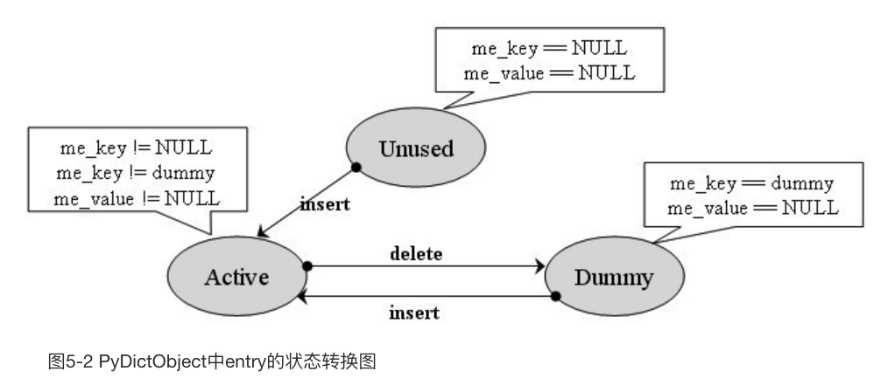
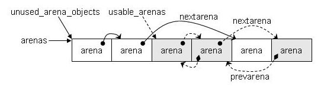

<!DOCTYPE html>
<html>
  <head>
    <title>python源码复习笔记 – Wyman的原创技术博客 – 恭喜你发现我的小站，撩我请加QQ：234707482、Wechat：_Wyman</title>

        <meta charset="utf-8" />
    <meta content='text/html; charset=utf-8' http-equiv='Content-Type'>
    <meta http-equiv='X-UA-Compatible' content='IE=edge'>
    <meta name='viewport' content='width=device-width, initial-scale=1.0, maximum-scale=1.0'>
    <meta name="baidu-site-verification" content="0OpfO1OtHA" />
    
    <meta name="description" content="" />
    <meta property="og:description" content="" />
    
    <meta name="author" content="Wyman的原创技术博客" />

    
    <meta property="og:title" content="python源码复习笔记" />
    <meta property="twitter:title" content="python源码复习笔记" />
    

    <!--[if lt IE 9]>
      <script src="http://html5shiv.googlecode.com/svn/trunk/html5.js"></script>
    <![endif]-->

    <link rel="stylesheet" type="text/css" href="/style.css" />
    <link rel="alternate" type="application/rss+xml" title="Wyman的原创技术博客 - 恭喜你发现我的小站，撩我请加QQ：234707482、Wechat：_Wyman" href="/feed.xml" />
    
	<!-- Google Analytics -->
	<script>
		(function(i,s,o,g,r,a,m){i['GoogleAnalyticsObject']=r;i[r]=i[r]||function(){
		(i[r].q=i[r].q||[]).push(arguments)},i[r].l=1*new Date();a=s.createElement(o),
		m=s.getElementsByTagName(o)[0];a.async=1;a.src=g;m.parentNode.insertBefore(a,m)
		})(window,document,'script','//www.google-analytics.com/analytics.js','ga');

		ga('create', 'UA-65954265-1', 'auto');
		ga('send', 'pageview', {
		  'page': '/python-1/',
		  'title': 'python源码复习笔记'
		});
	</script>
	<!-- End Google Analytics -->
	<!-- Baidu Analytics -->
	<script>
		var _hmt = _hmt || [];
		(function() {
		  var hm = document.createElement("script");
		  hm.src = "//hm.baidu.com/hm.js?0dc968591d8c64196a37eca9ca4f86b3";
		  var s = document.getElementsByTagName("script")[0]; 
		  s.parentNode.insertBefore(hm, s);
		})();
	</script>
	<!-- End Baidu Analytics -->

  </head>

  <body>
    <div class="wrapper-masthead">
      <div class="container">
        <header class="masthead clearfix">
          <a href="/" class="site-avatar"></a>

          <div class="site-info">
            <h1 class="site-name"><a href="/">Wyman的原创技术博客</a></h1>
            <p class="site-description">恭喜你发现我的小站，撩我请加QQ：234707482、Wechat：_Wyman</p>
          </div>

          <nav>
            <a href="/">Blog</a>
            <a href="/about">About</a>
          </nav>
        </header>
      </div>
    </div>

    <nav class="nav2">
      <ul></ul>
    </nav>

    <div id="main" role="main" class="container">
      <section>  
        <script src="https://code.jquery.com/jquery-3.3.0.min.js" integrity="sha256-RTQy8VOmNlT6b2PIRur37p6JEBZUE7o8wPgMvu18MC4=" crossorigin="anonymous"></script>
<script src="/main.js"></script>

<h1>python源码复习笔记</h1>
<h3>Tags: <a href="/tag/python/" rel="tag">python</a></h3>
<article class="post">
  <div class="entry">
    <!--more-->

<p>以前看过python源码，没记笔记，忘光了，现在重新瞧瞧。</p>

<h1>各种对象的实现</h1>

<h2>通用部分</h2>

<h3>PyObject_HEAD 和 PyObject_VAR_HEAD</h3>
<div class="highlight"><pre><code class="language-c" data-lang="c"><span class="cm">/* PyObject_HEAD defines the initial segment of every PyObject. */</span>
<span class="cp">#define PyObject_HEAD                   \
    _PyObject_HEAD_EXTRA                \
    Py_ssize_t ob_refcnt;               \
    struct _typeobject *ob_type;
</span>
<span class="cp">#define PyObject_VAR_HEAD               \
    PyObject_HEAD                       \
    Py_ssize_t ob_size; </span><span class="cm">/* Number of items in variable part */</span><span class="cp">
</span></code></pre></div>
<p>这2个东西会出现在各种对象的结构定义里。obj_refcnt显然是引用计数，ob_type是类型元信息的指针，ob_size是变长对象的对象数量信息。</p>

<h2>PyIntObject 普通整数（long）</h2>

<p>文件：</p>

<ul>
<li>intobject.h</li>
<li>intobject.c</li>
</ul>
<div class="highlight"><pre><code class="language-c" data-lang="c"><span class="k">typedef</span> <span class="k">struct</span> <span class="p">{</span>
    <span class="n">PyObject_HEAD</span>
    <span class="kt">long</span> <span class="n">ob_ival</span><span class="p">;</span>
<span class="p">}</span> <span class="n">PyIntObject</span><span class="p">;</span>
</code></pre></div>
<p>应该是最简单的对象类型了，用一个long存数据信息。</p>

<p>下面是整数对象的类型元信息，其实就是自定义实现了object.h里的_typeobject：</p>
<div class="highlight"><pre><code class="language-c" data-lang="c"><span class="n">PyTypeObject</span> <span class="n">PyInt_Type</span> <span class="o">=</span> <span class="p">{</span>
    <span class="n">PyVarObject_HEAD_INIT</span><span class="p">(</span><span class="o">&amp;</span><span class="n">PyType_Type</span><span class="p">,</span> <span class="mi">0</span><span class="p">)</span>
    <span class="s">"int"</span><span class="p">,</span> <span class="c1">// tp_name 用于打印</span>
    <span class="k">sizeof</span><span class="p">(</span><span class="n">PyIntObject</span><span class="p">),</span> <span class="c1">// tp_basicsize </span>
    <span class="mi">0</span><span class="p">,</span> <span class="c1">// tp_itemsize 因为不是变长类型，所以为0</span>
    <span class="c1">// 下面是各种函数指针</span>
    <span class="p">(</span><span class="n">destructor</span><span class="p">)</span><span class="n">int_dealloc</span><span class="p">,</span>                    <span class="cm">/* tp_dealloc */</span>
    <span class="p">(</span><span class="n">printfunc</span><span class="p">)</span><span class="n">int_print</span><span class="p">,</span>                       <span class="cm">/* tp_print */</span>
    <span class="err">···</span>  
    <span class="o">&amp;</span><span class="n">int_as_number</span><span class="p">,</span>                             <span class="cm">/* tp_as_number */</span>
    <span class="err">···</span>
    <span class="n">Py_TPFLAGS_DEFAULT</span> <span class="o">|</span> <span class="n">Py_TPFLAGS_CHECKTYPES</span> <span class="o">|</span>
        <span class="n">Py_TPFLAGS_BASETYPE</span> <span class="o">|</span> <span class="n">Py_TPFLAGS_INT_SUBCLASS</span><span class="p">,</span>          <span class="cm">/* tp_flags */</span>
    <span class="err">···</span>
<span class="p">};</span>
</code></pre></div>
<p>PyIntObject的代数运算过程中，可能会转换成PyLongObject。</p>

<h3>创建</h3>

<p>总共4个C API：</p>
<div class="highlight"><pre><code class="language-c" data-lang="c"><span class="n">PyAPI_FUNC</span><span class="p">(</span><span class="n">PyObject</span> <span class="o">*</span><span class="p">)</span> <span class="n">PyInt_FromString</span><span class="p">(</span><span class="kt">char</span><span class="o">*</span><span class="p">,</span> <span class="kt">char</span><span class="o">**</span><span class="p">,</span> <span class="kt">int</span><span class="p">);</span>
<span class="n">PyAPI_FUNC</span><span class="p">(</span><span class="n">PyObject</span> <span class="o">*</span><span class="p">)</span> <span class="n">PyInt_FromLong</span><span class="p">(</span><span class="kt">long</span><span class="p">);</span>
<span class="n">PyAPI_FUNC</span><span class="p">(</span><span class="n">PyObject</span> <span class="o">*</span><span class="p">)</span> <span class="n">PyInt_FromSize_t</span><span class="p">(</span><span class="kt">size_t</span><span class="p">);</span>
<span class="n">PyAPI_FUNC</span><span class="p">(</span><span class="n">PyObject</span> <span class="o">*</span><span class="p">)</span> <span class="n">PyInt_FromSsize_t</span><span class="p">(</span><span class="n">Py_ssize_t</span><span class="p">);</span>
</code></pre></div>
<p>第1、3、4个API会根据传入的值的大小，选择创建PyIntObject还是PyLongObject。</p>

<p>所以主要看PyInt_FromLong。</p>
<div class="highlight"><pre><code class="language-c" data-lang="c"><span class="n">PyObject</span> <span class="o">*</span>
<span class="nf">PyInt_FromLong</span><span class="p">(</span><span class="kt">long</span> <span class="n">ival</span><span class="p">)</span>
<span class="p">{</span>
    <span class="k">register</span> <span class="n">PyIntObject</span> <span class="o">*</span><span class="n">v</span><span class="p">;</span>
    <span class="c1">// small_ints</span>
<span class="cp">#if NSMALLNEGINTS + NSMALLPOSINTS &gt; 0
</span>    <span class="k">if</span> <span class="p">(</span><span class="o">-</span><span class="n">NSMALLNEGINTS</span> <span class="o">&lt;=</span> <span class="n">ival</span> <span class="o">&amp;&amp;</span> <span class="n">ival</span> <span class="o">&lt;</span> <span class="n">NSMALLPOSINTS</span><span class="p">)</span> <span class="p">{</span>
        <span class="n">v</span> <span class="o">=</span> <span class="n">small_ints</span><span class="p">[</span><span class="n">ival</span> <span class="o">+</span> <span class="n">NSMALLNEGINTS</span><span class="p">];</span>
        <span class="n">Py_INCREF</span><span class="p">(</span><span class="n">v</span><span class="p">);</span>
        <span class="err">···</span>
        <span class="k">return</span> <span class="p">(</span><span class="n">PyObject</span> <span class="o">*</span><span class="p">)</span> <span class="n">v</span><span class="p">;</span>
    <span class="p">}</span>
<span class="cp">#endif
</span>    <span class="k">if</span> <span class="p">(</span><span class="n">free_list</span> <span class="o">==</span> <span class="nb">NULL</span><span class="p">)</span> <span class="p">{</span>
        <span class="k">if</span> <span class="p">((</span><span class="n">free_list</span> <span class="o">=</span> <span class="n">fill_free_list</span><span class="p">())</span> <span class="o">==</span> <span class="nb">NULL</span><span class="p">)</span>
            <span class="k">return</span> <span class="nb">NULL</span><span class="p">;</span>
    <span class="p">}</span>
    <span class="cm">/* Inline PyObject_New */</span>
    <span class="n">v</span> <span class="o">=</span> <span class="n">free_list</span><span class="p">;</span>
    <span class="n">free_list</span> <span class="o">=</span> <span class="p">(</span><span class="n">PyIntObject</span> <span class="o">*</span><span class="p">)</span><span class="n">Py_TYPE</span><span class="p">(</span><span class="n">v</span><span class="p">);</span>
    <span class="p">(</span><span class="kt">void</span><span class="p">)</span><span class="n">PyObject_INIT</span><span class="p">(</span><span class="n">v</span><span class="p">,</span> <span class="o">&amp;</span><span class="n">PyInt_Type</span><span class="p">);</span>
    <span class="n">v</span><span class="o">-&gt;</span><span class="n">ob_ival</span> <span class="o">=</span> <span class="n">ival</span><span class="p">;</span>
    <span class="k">return</span> <span class="p">(</span><span class="n">PyObject</span> <span class="o">*</span><span class="p">)</span> <span class="n">v</span><span class="p">;</span>
<span class="p">}</span>
</code></pre></div>
<p>这段代码涉及到了2大机制，一个是small_ints:</p>
<div class="highlight"><pre><code class="language-c" data-lang="c"><span class="cp">#define NSMALLPOSINTS           257
#define NSMALLNEGINTS           5
</span><span class="k">static</span> <span class="n">PyIntObject</span> <span class="o">*</span><span class="n">small_ints</span><span class="p">[</span><span class="n">NSMALLNEGINTS</span> <span class="o">+</span> <span class="n">NSMALLPOSINTS</span><span class="p">];</span>
</code></pre></div>
<p>python最多会缓存262个小整数，PyInt_FromLong每次检测val是不是在小整数范围，是的话就复用small_ints里的对象。</p>

<p>small_ints是在python启动的时候就先初始化的：</p>
<div class="highlight"><pre><code class="language-c" data-lang="c"><span class="kt">int</span>
<span class="nf">_PyInt_Init</span><span class="p">(</span><span class="kt">void</span><span class="p">)</span>
<span class="p">{</span>
    <span class="n">PyIntObject</span> <span class="o">*</span><span class="n">v</span><span class="p">;</span>
    <span class="kt">int</span> <span class="n">ival</span><span class="p">;</span>
<span class="cp">#if NSMALLNEGINTS + NSMALLPOSINTS &gt; 0
</span>    <span class="k">for</span> <span class="p">(</span><span class="n">ival</span> <span class="o">=</span> <span class="o">-</span><span class="n">NSMALLNEGINTS</span><span class="p">;</span> <span class="n">ival</span> <span class="o">&lt;</span> <span class="n">NSMALLPOSINTS</span><span class="p">;</span> <span class="n">ival</span><span class="o">++</span><span class="p">)</span> <span class="p">{</span>
        <span class="k">if</span> <span class="p">(</span><span class="o">!</span><span class="n">free_list</span> <span class="o">&amp;&amp;</span> <span class="p">(</span><span class="n">free_list</span> <span class="o">=</span> <span class="n">fill_free_list</span><span class="p">())</span> <span class="o">==</span> <span class="nb">NULL</span><span class="p">)</span>
            <span class="k">return</span> <span class="mi">0</span><span class="p">;</span>
        <span class="cm">/* PyObject_New is inlined */</span>
        <span class="n">v</span> <span class="o">=</span> <span class="n">free_list</span><span class="p">;</span>
        <span class="n">free_list</span> <span class="o">=</span> <span class="p">(</span><span class="n">PyIntObject</span> <span class="o">*</span><span class="p">)</span><span class="n">Py_TYPE</span><span class="p">(</span><span class="n">v</span><span class="p">);</span>
        <span class="p">(</span><span class="kt">void</span><span class="p">)</span><span class="n">PyObject_INIT</span><span class="p">(</span><span class="n">v</span><span class="p">,</span> <span class="o">&amp;</span><span class="n">PyInt_Type</span><span class="p">);</span>
        <span class="n">v</span><span class="o">-&gt;</span><span class="n">ob_ival</span> <span class="o">=</span> <span class="n">ival</span><span class="p">;</span>
        <span class="n">small_ints</span><span class="p">[</span><span class="n">ival</span> <span class="o">+</span> <span class="n">NSMALLNEGINTS</span><span class="p">]</span> <span class="o">=</span> <span class="n">v</span><span class="p">;</span>
    <span class="p">}</span>
<span class="cp">#endif
</span>    <span class="k">return</span> <span class="mi">1</span><span class="p">;</span>
<span class="p">}</span>
</code></pre></div>
<p>这里面已经用到了free_list。</p>

<p>另一个机制是内存池，一块内存放几百个整数，并且会复用内存，改善了性能：</p>
<div class="highlight"><pre><code class="language-c" data-lang="c"><span class="cp">#define BLOCK_SIZE      1000    </span><span class="cm">/* 1K less typical malloc overhead */</span><span class="cp">
#define BHEAD_SIZE      8       </span><span class="cm">/* Enough for a 64-bit pointer */</span><span class="cp">
#define N_INTOBJECTS    ((BLOCK_SIZE - BHEAD_SIZE) / sizeof(PyIntObject))
</span>
<span class="c1">// 连续存放多个PyIntObject的内存块</span>
<span class="c1">// 块与块之间用next指针串起来</span>
<span class="k">struct</span> <span class="n">_intblock</span> <span class="p">{</span>
    <span class="k">struct</span> <span class="n">_intblock</span> <span class="o">*</span><span class="n">next</span><span class="p">;</span>
    <span class="n">PyIntObject</span> <span class="n">objects</span><span class="p">[</span><span class="n">N_INTOBJECTS</span><span class="p">];</span>
<span class="p">};</span>


<span class="k">typedef</span> <span class="k">struct</span> <span class="n">_intblock</span> <span class="n">PyIntBlock</span><span class="p">;</span>

<span class="c1">// 当前int内存块的头节点</span>
<span class="k">static</span> <span class="n">PyIntBlock</span> <span class="o">*</span><span class="n">block_list</span> <span class="o">=</span> <span class="nb">NULL</span><span class="p">;</span>
<span class="c1">// 可用的PyIntObject链表的头</span>
<span class="k">static</span> <span class="n">PyIntObject</span> <span class="o">*</span><span class="n">free_list</span> <span class="o">=</span> <span class="nb">NULL</span><span class="p">;</span>

<span class="k">static</span> <span class="n">PyIntObject</span> <span class="o">*</span>
<span class="nf">fill_free_list</span><span class="p">(</span><span class="kt">void</span><span class="p">)</span>
<span class="p">{</span>
    <span class="n">PyIntObject</span> <span class="o">*</span><span class="n">p</span><span class="p">,</span> <span class="o">*</span><span class="n">q</span><span class="p">;</span>
    <span class="cm">/* Python's object allocator isn't appropriate for large blocks. */</span>
    <span class="n">p</span> <span class="o">=</span> <span class="p">(</span><span class="n">PyIntObject</span> <span class="o">*</span><span class="p">)</span> <span class="n">PyMem_MALLOC</span><span class="p">(</span><span class="k">sizeof</span><span class="p">(</span><span class="n">PyIntBlock</span><span class="p">));</span>
    <span class="k">if</span> <span class="p">(</span><span class="n">p</span> <span class="o">==</span> <span class="nb">NULL</span><span class="p">)</span>
        <span class="k">return</span> <span class="p">(</span><span class="n">PyIntObject</span> <span class="o">*</span><span class="p">)</span> <span class="n">PyErr_NoMemory</span><span class="p">();</span>
    <span class="p">((</span><span class="n">PyIntBlock</span> <span class="o">*</span><span class="p">)</span><span class="n">p</span><span class="p">)</span><span class="o">-&gt;</span><span class="n">next</span> <span class="o">=</span> <span class="n">block_list</span><span class="p">;</span>
    <span class="n">block_list</span> <span class="o">=</span> <span class="p">(</span><span class="n">PyIntBlock</span> <span class="o">*</span><span class="p">)</span><span class="n">p</span><span class="p">;</span>
    <span class="cm">/* Link the int objects together, from rear to front, then return
       the address of the last int object in the block. */</span>
    <span class="c1">// 这里用Py_TYPE指针，把内存块里的所有对象都串成链表，</span>
    <span class="c1">// 不过要注意，串的方向是逆的，从后往前，函数最后返回的是最后一个对象</span>
    <span class="n">p</span> <span class="o">=</span> <span class="o">&amp;</span><span class="p">((</span><span class="n">PyIntBlock</span> <span class="o">*</span><span class="p">)</span><span class="n">p</span><span class="p">)</span><span class="o">-&gt;</span><span class="n">objects</span><span class="p">[</span><span class="mi">0</span><span class="p">];</span>
    <span class="n">q</span> <span class="o">=</span> <span class="n">p</span> <span class="o">+</span> <span class="n">N_INTOBJECTS</span><span class="p">;</span>
    <span class="k">while</span> <span class="p">(</span><span class="o">--</span><span class="n">q</span> <span class="o">&gt;</span> <span class="n">p</span><span class="p">)</span>
        <span class="n">Py_TYPE</span><span class="p">(</span><span class="n">q</span><span class="p">)</span> <span class="o">=</span> <span class="p">(</span><span class="k">struct</span> <span class="n">_typeobject</span> <span class="o">*</span><span class="p">)(</span><span class="n">q</span><span class="o">-</span><span class="mi">1</span><span class="p">);</span>
    <span class="n">Py_TYPE</span><span class="p">(</span><span class="n">q</span><span class="p">)</span> <span class="o">=</span> <span class="nb">NULL</span><span class="p">;</span>
    <span class="k">return</span> <span class="n">p</span> <span class="o">+</span> <span class="n">N_INTOBJECTS</span> <span class="o">-</span> <span class="mi">1</span><span class="p">;</span>
<span class="p">}</span>
</code></pre></div>
<p>每次一个PyIntObject被回收，就会放进free_list的头：</p>
<div class="highlight"><pre><code class="language-c" data-lang="c"><span class="k">static</span> <span class="kt">void</span>
<span class="nf">int_dealloc</span><span class="p">(</span><span class="n">PyIntObject</span> <span class="o">*</span><span class="n">v</span><span class="p">)</span>
<span class="p">{</span>
    <span class="k">if</span> <span class="p">(</span><span class="n">PyInt_CheckExact</span><span class="p">(</span><span class="n">v</span><span class="p">))</span> <span class="p">{</span>
        <span class="n">Py_TYPE</span><span class="p">(</span><span class="n">v</span><span class="p">)</span> <span class="o">=</span> <span class="p">(</span><span class="k">struct</span> <span class="n">_typeobject</span> <span class="o">*</span><span class="p">)</span><span class="n">free_list</span><span class="p">;</span>
        <span class="n">free_list</span> <span class="o">=</span> <span class="n">v</span><span class="p">;</span>
    <span class="p">}</span>
    <span class="k">else</span>
        <span class="n">Py_TYPE</span><span class="p">(</span><span class="n">v</span><span class="p">)</span><span class="o">-&gt;</span><span class="n">tp_free</span><span class="p">((</span><span class="n">PyObject</span> <span class="o">*</span><span class="p">)</span><span class="n">v</span><span class="p">);</span>
<span class="p">}</span>
</code></pre></div>
<h2>PyBoolObject</h2>

<p>bool其实就是int:</p>
<div class="highlight"><pre><code class="language-c" data-lang="c"><span class="k">typedef</span> <span class="n">PyIntObject</span> <span class="n">PyBoolObject</span><span class="p">;</span>
</code></pre></div>
<p>不过True和False不会有多个实例，而是各一个，然而重复使用：</p>
<div class="highlight"><pre><code class="language-c" data-lang="c"><span class="cm">/* Py_False and Py_True are the only two bools in existence.
Don't forget to apply Py_INCREF() when returning either!!! */</span>

<span class="cm">/* Don't use these directly */</span>
<span class="n">PyAPI_DATA</span><span class="p">(</span><span class="n">PyIntObject</span><span class="p">)</span> <span class="n">_Py_ZeroStruct</span><span class="p">,</span> <span class="n">_Py_TrueStruct</span><span class="p">;</span>

<span class="cm">/* Use these macros */</span>
<span class="cp">#define Py_False ((PyObject *) &amp;_Py_ZeroStruct)
#define Py_True ((PyObject *) &amp;_Py_TrueStruct)
</span>
<span class="cm">/* Named Zero for link-level compatibility */</span>
<span class="n">PyIntObject</span> <span class="n">_Py_ZeroStruct</span> <span class="o">=</span> <span class="p">{</span>
    <span class="n">PyObject_HEAD_INIT</span><span class="p">(</span><span class="o">&amp;</span><span class="n">PyBool_Type</span><span class="p">)</span>
    <span class="mi">0</span>
<span class="p">};</span>

<span class="n">PyIntObject</span> <span class="n">_Py_TrueStruct</span> <span class="o">=</span> <span class="p">{</span>
    <span class="n">PyObject_HEAD_INIT</span><span class="p">(</span><span class="o">&amp;</span><span class="n">PyBool_Type</span><span class="p">)</span>
    <span class="mi">1</span>
<span class="p">};</span>

</code></pre></div>
<h2>PyLongObject 任意大整数</h2>

<p>文件：</p>

<ul>
<li>longobject.h</li>
<li>longobject.c</li>
<li>longintrepr.h</li>
</ul>

<p>这个longObject反而不是用long实现了，而是用了复杂的大数运算技巧。</p>
<div class="highlight"><pre><code class="language-c" data-lang="c"><span class="k">struct</span> <span class="n">_longobject</span> <span class="p">{</span>
    <span class="n">PyObject_VAR_HEAD</span>
    <span class="n">digit</span> <span class="n">ob_digit</span><span class="p">[</span><span class="mi">1</span><span class="p">];</span>
<span class="p">};</span>

<span class="k">typedef</span> <span class="n">PY_UINT32_T</span> <span class="n">digit</span><span class="p">;</span>

<span class="k">typedef</span> <span class="k">struct</span> <span class="n">_longobject</span> <span class="n">PyLongObject</span><span class="p">;</span> <span class="cm">/* Revealed in longintrepr.h */</span>
</code></pre></div>
<p>PyLongObject的创建和销毁都是直接在堆内存中发生，没有什么复杂优化：</p>
<div class="highlight"><pre><code class="language-c" data-lang="c"><span class="c1">// _PyLong_New是根据数字digit的数量来创建的，而不是数值上的大小</span>
<span class="n">PyLongObject</span> <span class="o">*</span>
<span class="nf">_PyLong_New</span><span class="p">(</span><span class="n">Py_ssize_t</span> <span class="n">size</span><span class="p">)</span>
<span class="p">{</span>
    <span class="k">if</span> <span class="p">(</span><span class="n">size</span> <span class="o">&gt;</span> <span class="p">(</span><span class="n">Py_ssize_t</span><span class="p">)</span><span class="n">MAX_LONG_DIGITS</span><span class="p">)</span> <span class="p">{</span>
        <span class="n">PyErr_SetString</span><span class="p">(</span><span class="n">PyExc_OverflowError</span><span class="p">,</span>
                        <span class="s">"too many digits in integer"</span><span class="p">);</span>
        <span class="k">return</span> <span class="nb">NULL</span><span class="p">;</span>
    <span class="p">}</span>
    <span class="cm">/* coverity[ampersand_in_size] */</span>
    <span class="cm">/* XXX(nnorwitz): PyObject_NEW_VAR / _PyObject_VAR_SIZE need to detect
       overflow */</span>
    <span class="k">return</span> <span class="n">PyObject_NEW_VAR</span><span class="p">(</span><span class="n">PyLongObject</span><span class="p">,</span> <span class="o">&amp;</span><span class="n">PyLong_Type</span><span class="p">,</span> <span class="n">size</span><span class="p">);</span>
<span class="p">}</span>


<span class="k">static</span> <span class="kt">void</span>
<span class="nf">long_dealloc</span><span class="p">(</span><span class="n">PyObject</span> <span class="o">*</span><span class="n">v</span><span class="p">)</span>
<span class="p">{</span>
    <span class="n">Py_TYPE</span><span class="p">(</span><span class="n">v</span><span class="p">)</span><span class="o">-&gt;</span><span class="n">tp_free</span><span class="p">(</span><span class="n">v</span><span class="p">);</span>
<span class="p">}</span>
</code></pre></div>
<h2>PyFloatObject 普通浮点数(double)</h2>
<div class="highlight"><pre><code class="language-c" data-lang="c"><span class="k">typedef</span> <span class="k">struct</span> <span class="p">{</span>
    <span class="n">PyObject_HEAD</span>
    <span class="kt">double</span> <span class="n">ob_fval</span><span class="p">;</span>
<span class="p">}</span> <span class="n">PyFloatObject</span><span class="p">;</span>
</code></pre></div>
<p>可见对于double范围内的浮点数，都是用double实现的。</p>
<div class="highlight"><pre><code class="language-c" data-lang="c"><span class="n">PyObject</span> <span class="o">*</span>
<span class="nf">PyFloat_FromDouble</span><span class="p">(</span><span class="kt">double</span> <span class="n">fval</span><span class="p">)</span>
<span class="p">{</span>
    <span class="k">register</span> <span class="n">PyFloatObject</span> <span class="o">*</span><span class="n">op</span><span class="p">;</span>
    <span class="k">if</span> <span class="p">(</span><span class="n">free_list</span> <span class="o">==</span> <span class="nb">NULL</span><span class="p">)</span> <span class="p">{</span>
        <span class="k">if</span> <span class="p">((</span><span class="n">free_list</span> <span class="o">=</span> <span class="n">fill_free_list</span><span class="p">())</span> <span class="o">==</span> <span class="nb">NULL</span><span class="p">)</span>
            <span class="k">return</span> <span class="nb">NULL</span><span class="p">;</span>
    <span class="p">}</span>
    <span class="cm">/* Inline PyObject_New */</span>
    <span class="n">op</span> <span class="o">=</span> <span class="n">free_list</span><span class="p">;</span>
    <span class="n">free_list</span> <span class="o">=</span> <span class="p">(</span><span class="n">PyFloatObject</span> <span class="o">*</span><span class="p">)</span><span class="n">Py_TYPE</span><span class="p">(</span><span class="n">op</span><span class="p">);</span>
    <span class="p">(</span><span class="kt">void</span><span class="p">)</span><span class="n">PyObject_INIT</span><span class="p">(</span><span class="n">op</span><span class="p">,</span> <span class="o">&amp;</span><span class="n">PyFloat_Type</span><span class="p">);</span>
    <span class="n">op</span><span class="o">-&gt;</span><span class="n">ob_fval</span> <span class="o">=</span> <span class="n">fval</span><span class="p">;</span>
    <span class="k">return</span> <span class="p">(</span><span class="n">PyObject</span> <span class="o">*</span><span class="p">)</span> <span class="n">op</span><span class="p">;</span>
<span class="p">}</span>
</code></pre></div>
<p>观察创建函数，发现也有free_list对象池机制。不过就没有small_ints了，毕竟是实数。</p>

<h2>PyStringObject</h2>
<div class="highlight"><pre><code class="language-c" data-lang="c"><span class="k">typedef</span> <span class="k">struct</span> <span class="p">{</span>
    <span class="n">PyObject_VAR_HEAD</span>
    <span class="kt">long</span> <span class="n">ob_shash</span><span class="p">;</span>
    <span class="kt">int</span> <span class="n">ob_sstate</span><span class="p">;</span>
    <span class="kt">char</span> <span class="n">ob_sval</span><span class="p">[</span><span class="mi">1</span><span class="p">];</span>

    <span class="cm">/* Invariants:
     *     ob_sval contains space for 'ob_size+1' elements.
     *     ob_sval[ob_size] == 0.
     *     ob_shash is the hash of the string or -1 if not computed yet.
     *     ob_sstate != 0 iff the string object is in stringobject.c's
     *       'interned' dictionary; in this case the two references
     *       from 'interned' to this object are *not counted* in ob_refcnt.
     */</span>
<span class="p">}</span> <span class="n">PyStringObject</span><span class="p">;</span>
</code></pre></div>
<p>根据注释看，ob_sval存了ob_size+1个字符字节，+1是为了存&#39;\0&#39;；ob_shash相当于这个字符串的id，用来快速比对字符串；ob_sstate和缓冲池设计有关。</p>

<h3>intern机制</h3>

<ul>
<li>这个机制<strong>默认</strong>只对长度为0或1的字符串有用。如果相对更长的字符串启用，那么要使用PyString_InternFromString。</li>
<li>intern里的字符串是会销毁的，条件是引用计数降到0，因此intern里的PyObject并不持有引用（因为有k、v2个引用，所以是-2）</li>
<li>普通创建的intern字符串是SSTATE_INTERNED_MORTAL的，即会销毁，不过IMMORTAL的intern字符串并没有使用到，所以可认为所有都是mortal的。</li>
<li>实际上intern机制并不会减少字符串内存分配开销，因为intern机制是发生在内存分配之后的。</li>
<li>之所以要创建临时的对象，是因为PyDict_GetItem(PyObject *op, PyObject *key)，查找参数是PyObject，必须创建一个临时对象来作为参数去调用PyDict_GetItem。</li>
<li>唯一不会创建临时对象的情况是，空字符串或单字符串，这是通过记录static的characters数组和*nullstring实现的。</li>
</ul>

<h3>连接字符串问题</h3>

<p>一句话总结，用+号来连接字符串是低效的，要做N-1次内存分配；正确的做法是用join函数。</p>

<h2>PyListObject</h2>
<div class="highlight"><pre><code class="language-c" data-lang="c"><span class="k">typedef</span> <span class="k">struct</span> <span class="p">{</span>
    <span class="n">PyObject_VAR_HEAD</span>
    <span class="cm">/* Vector of pointers to list elements.  list[0] is ob_item[0], etc. */</span>
    <span class="n">PyObject</span> <span class="o">**</span><span class="n">ob_item</span><span class="p">;</span>

    <span class="cm">/* ob_item contains space for 'allocated' elements.  The number
     * currently in use is ob_size.
     * Invariants:
     *     0 &lt;= ob_size &lt;= allocated
     *     len(list) == ob_size
     *     ob_item == NULL implies ob_size == allocated == 0
     * list.sort() temporarily sets allocated to -1 to detect mutations.
     *
     * Items must normally not be NULL, except during construction when
     * the list is not yet visible outside the function that builds it.
     */</span>
    <span class="n">Py_ssize_t</span> <span class="n">allocated</span><span class="p">;</span>
<span class="p">}</span> <span class="n">PyListObject</span><span class="p">;</span>
</code></pre></div>
<h3>基本特点</h3>

<ul>
<li>也有free_list对象池优化，默认80个</li>
<li>list的设计像STL的vector</li>
<li>因为存的是指针，所以移动元素的开销比较小，插入元素，就会发生大量元素挪动</li>
<li>list_dealloc会销毁元素列表并回收内存，以及尝试把list对象放进free_list里</li>
</ul>

<h3>list_resize</h3>

<ul>
<li>如果newsize在[allocated, allocated/2]范围，那么不用动内存</li>
<li>如果newsize小于allocated/2，还会发生内存收缩，以节省内存</li>
</ul>

<h2>PyDictObject</h2>

<h3>基本特点</h3>

<ul>
<li>基于散列表而不是二叉树</li>
<li>冲突解决基于开放定址法，而不是开链</li>
</ul>

<h3>结构</h3>
<div class="highlight"><pre><code class="language-c" data-lang="c">
<span class="c1">// 表示每个dict至少有8个entry</span>
<span class="cp">#define PyDict_MINSIZE 8
</span>
<span class="k">typedef</span> <span class="k">struct</span> <span class="p">{</span>
    <span class="cm">/* Cached hash code of me_key.  Note that hash codes are C longs.
     * We have to use Py_ssize_t instead because dict_popitem() abuses
     * me_hash to hold a search finger.
     */</span>
    <span class="n">Py_ssize_t</span> <span class="n">me_hash</span><span class="p">;</span>
    <span class="n">PyObject</span> <span class="o">*</span><span class="n">me_key</span><span class="p">;</span>
    <span class="n">PyObject</span> <span class="o">*</span><span class="n">me_value</span><span class="p">;</span>
<span class="p">}</span> <span class="n">PyDictEntry</span><span class="p">;</span>

<span class="cm">/*
To ensure the lookup algorithm terminates, there must be at least one Unused
slot (NULL key) in the table.
The value ma_fill is the number of non-NULL keys (sum of Active and Dummy);
ma_used is the number of non-NULL, non-dummy keys (== the number of non-NULL
values == the number of Active items).
To avoid slowing down lookups on a near-full table, we resize the table when
it's two-thirds full.
*/</span>
<span class="k">typedef</span> <span class="k">struct</span> <span class="n">_dictobject</span> <span class="n">PyDictObject</span><span class="p">;</span>
<span class="k">struct</span> <span class="n">_dictobject</span> <span class="p">{</span>
    <span class="n">PyObject_HEAD</span>
    <span class="n">Py_ssize_t</span> <span class="n">ma_fill</span><span class="p">;</span>  <span class="cm">/* # Active + # Dummy */</span>
    <span class="n">Py_ssize_t</span> <span class="n">ma_used</span><span class="p">;</span>  <span class="cm">/* # Active */</span>
    <span class="c1">// slots等于2的幂，而ma_mask = slots - 1，mask除了记录了slots数之外还有别的用途  </span>
    <span class="n">Py_ssize_t</span> <span class="n">ma_mask</span><span class="p">;</span>
    <span class="n">PyDictEntry</span> <span class="o">*</span><span class="n">ma_table</span><span class="p">;</span>
    <span class="n">PyDictEntry</span> <span class="o">*</span><span class="p">(</span><span class="o">*</span><span class="n">ma_lookup</span><span class="p">)(</span><span class="n">PyDictObject</span> <span class="o">*</span><span class="n">mp</span><span class="p">,</span> <span class="n">PyObject</span> <span class="o">*</span><span class="n">key</span><span class="p">,</span> <span class="kt">long</span> <span class="n">hash</span><span class="p">);</span>
    <span class="n">PyDictEntry</span> <span class="n">ma_smalltable</span><span class="p">[</span><span class="n">PyDict_MINSIZE</span><span class="p">];</span>
<span class="p">};</span>
</code></pre></div>
<h3>entry的状态机</h3>

<ul>
<li>active: 被使用中</li>
<li>dummy：已移除，但因为还在冲突链中，所以不可使用</li>
<li>unused：未使用</li>
</ul>

<p></p>

<h3>PyDict_New</h3>
<div class="highlight"><pre><code class="language-c" data-lang="c"><span class="n">PyObject</span> <span class="o">*</span>
<span class="nf">PyDict_New</span><span class="p">(</span><span class="kt">void</span><span class="p">)</span>
<span class="p">{</span>
    <span class="k">register</span> <span class="n">PyDictObject</span> <span class="o">*</span><span class="n">mp</span><span class="p">;</span>
    <span class="k">if</span> <span class="p">(</span><span class="n">dummy</span> <span class="o">==</span> <span class="nb">NULL</span><span class="p">)</span> <span class="p">{</span> <span class="cm">/* Auto-initialize dummy */</span>
        <span class="n">dummy</span> <span class="o">=</span> <span class="n">PyString_FromString</span><span class="p">(</span><span class="s">"&lt;dummy key&gt;"</span><span class="p">);</span>
        <span class="k">if</span> <span class="p">(</span><span class="n">dummy</span> <span class="o">==</span> <span class="nb">NULL</span><span class="p">)</span>
            <span class="k">return</span> <span class="nb">NULL</span><span class="p">;</span>
    <span class="p">}</span>
    <span class="k">if</span> <span class="p">(</span><span class="n">numfree</span><span class="p">)</span> <span class="p">{</span>
        <span class="n">mp</span> <span class="o">=</span> <span class="n">free_list</span><span class="p">[</span><span class="o">--</span><span class="n">numfree</span><span class="p">];</span>
        <span class="n">assert</span> <span class="p">(</span><span class="n">mp</span> <span class="o">!=</span> <span class="nb">NULL</span><span class="p">);</span>
        <span class="n">assert</span> <span class="p">(</span><span class="n">Py_TYPE</span><span class="p">(</span><span class="n">mp</span><span class="p">)</span> <span class="o">==</span> <span class="o">&amp;</span><span class="n">PyDict_Type</span><span class="p">);</span>
        <span class="n">_Py_NewReference</span><span class="p">((</span><span class="n">PyObject</span> <span class="o">*</span><span class="p">)</span><span class="n">mp</span><span class="p">);</span>
        <span class="k">if</span> <span class="p">(</span><span class="n">mp</span><span class="o">-&gt;</span><span class="n">ma_fill</span><span class="p">)</span> <span class="p">{</span>
            <span class="n">EMPTY_TO_MINSIZE</span><span class="p">(</span><span class="n">mp</span><span class="p">);</span>
        <span class="p">}</span> <span class="k">else</span> <span class="p">{</span>
            <span class="cm">/* At least set ma_table and ma_mask; these are wrong
               if an empty but presized dict is added to freelist */</span>
            <span class="n">INIT_NONZERO_DICT_SLOTS</span><span class="p">(</span><span class="n">mp</span><span class="p">);</span>
        <span class="p">}</span>
        <span class="n">assert</span> <span class="p">(</span><span class="n">mp</span><span class="o">-&gt;</span><span class="n">ma_used</span> <span class="o">==</span> <span class="mi">0</span><span class="p">);</span>
        <span class="n">assert</span> <span class="p">(</span><span class="n">mp</span><span class="o">-&gt;</span><span class="n">ma_table</span> <span class="o">==</span> <span class="n">mp</span><span class="o">-&gt;</span><span class="n">ma_smalltable</span><span class="p">);</span>
        <span class="n">assert</span> <span class="p">(</span><span class="n">mp</span><span class="o">-&gt;</span><span class="n">ma_mask</span> <span class="o">==</span> <span class="n">PyDict_MINSIZE</span> <span class="o">-</span> <span class="mi">1</span><span class="p">);</span>
    <span class="p">}</span> <span class="k">else</span> <span class="p">{</span>
        <span class="n">mp</span> <span class="o">=</span> <span class="n">PyObject_GC_New</span><span class="p">(</span><span class="n">PyDictObject</span><span class="p">,</span> <span class="o">&amp;</span><span class="n">PyDict_Type</span><span class="p">);</span>
        <span class="k">if</span> <span class="p">(</span><span class="n">mp</span> <span class="o">==</span> <span class="nb">NULL</span><span class="p">)</span>
            <span class="k">return</span> <span class="nb">NULL</span><span class="p">;</span>
        <span class="n">EMPTY_TO_MINSIZE</span><span class="p">(</span><span class="n">mp</span><span class="p">);</span>
    <span class="p">}</span>
    <span class="n">mp</span><span class="o">-&gt;</span><span class="n">ma_lookup</span> <span class="o">=</span> <span class="n">lookdict_string</span><span class="p">;</span>
    <span class="k">return</span> <span class="p">(</span><span class="n">PyObject</span> <span class="o">*</span><span class="p">)</span><span class="n">mp</span><span class="p">;</span>
<span class="p">}</span>
</code></pre></div>
<p>主要做了三件事：</p>

<ul>
<li>初始化dummy</li>
<li>判断有无free_list，有的话从free_list拿mp，没有的话new一个mp，并重置</li>
<li>设置ma_lookup</li>
</ul>

<h3>lookdict和lookdict_string</h3>

<p>lookdict_string是针对string作为key的那些dict的，而lookdict则是一般化的。</p>

<p>区别在于比较字符串不会引发异常，而比较一般化的key可能会引发异常。</p>

<p>共同点是，如果找不到目标key，那么会返回一个entry对象，entry里的me_value为NULL，这个entry不是临时的，而是dict里对应这个key的entry。所以caller可以增加kv到这个entry里。</p>

<p>一个dict默认是用lookdict_string的，只有遇到lookdict_string的key参数不是string，才会提升到lookdict。</p>

<p>lookdict_string是比lookdict高效的，所以能用字符串当key就尽量用字符串。</p>

<p>观察通用的lookdict，发现有一个freeslot变量，它指向第一个dummy的entry，当lookdict找不到目标key对应的entry时，就会返回freeslot，如果没有freeslot，那么就返回第一个被发现的unused的entry。</p>

<h3>插入元素</h3>

<p>insert接口：</p>
<div class="highlight"><pre><code class="language-c" data-lang="c"><span class="k">static</span> <span class="kt">int</span>
<span class="nf">insertdict_by_entry</span><span class="p">(</span><span class="k">register</span> <span class="n">PyDictObject</span> <span class="o">*</span><span class="n">mp</span><span class="p">,</span> <span class="n">PyObject</span> <span class="o">*</span><span class="n">key</span><span class="p">,</span> <span class="kt">long</span> <span class="n">hash</span><span class="p">,</span>
                    <span class="n">PyDictEntry</span> <span class="o">*</span><span class="n">ep</span><span class="p">,</span> <span class="n">PyObject</span> <span class="o">*</span><span class="n">value</span><span class="p">)</span>
<span class="p">{</span>
    <span class="n">PyObject</span> <span class="o">*</span><span class="n">old_value</span><span class="p">;</span>

    <span class="n">MAINTAIN_TRACKING</span><span class="p">(</span><span class="n">mp</span><span class="p">,</span> <span class="n">key</span><span class="p">,</span> <span class="n">value</span><span class="p">);</span>
    <span class="k">if</span> <span class="p">(</span><span class="n">ep</span><span class="o">-&gt;</span><span class="n">me_value</span> <span class="o">!=</span> <span class="nb">NULL</span><span class="p">)</span> <span class="p">{</span> <span class="c1">// 替换操作</span>
        <span class="n">old_value</span> <span class="o">=</span> <span class="n">ep</span><span class="o">-&gt;</span><span class="n">me_value</span><span class="p">;</span>
        <span class="n">ep</span><span class="o">-&gt;</span><span class="n">me_value</span> <span class="o">=</span> <span class="n">value</span><span class="p">;</span>
        <span class="n">Py_DECREF</span><span class="p">(</span><span class="n">old_value</span><span class="p">);</span> <span class="cm">/* which **CAN** re-enter */</span>
        <span class="n">Py_DECREF</span><span class="p">(</span><span class="n">key</span><span class="p">);</span>
    <span class="p">}</span>
    <span class="k">else</span> <span class="p">{</span>
        <span class="c1">// 要么是unused，要么是dummy</span>
        <span class="c1">// unused的话，fill统计值+1</span>
        <span class="c1">// dummy的话，dummy对象引用-1</span>
        <span class="k">if</span> <span class="p">(</span><span class="n">ep</span><span class="o">-&gt;</span><span class="n">me_key</span> <span class="o">==</span> <span class="nb">NULL</span><span class="p">)</span>
            <span class="n">mp</span><span class="o">-&gt;</span><span class="n">ma_fill</span><span class="o">++</span><span class="p">;</span>
        <span class="k">else</span> <span class="p">{</span>
            <span class="n">assert</span><span class="p">(</span><span class="n">ep</span><span class="o">-&gt;</span><span class="n">me_key</span> <span class="o">==</span> <span class="n">dummy</span><span class="p">);</span>
            <span class="n">Py_DECREF</span><span class="p">(</span><span class="n">dummy</span><span class="p">);</span>
        <span class="p">}</span>
        <span class="n">ep</span><span class="o">-&gt;</span><span class="n">me_key</span> <span class="o">=</span> <span class="n">key</span><span class="p">;</span> <span class="c1">// 此时已经处理完me_key的引用计数了，可以直接赋值</span>
        <span class="n">ep</span><span class="o">-&gt;</span><span class="n">me_hash</span> <span class="o">=</span> <span class="p">(</span><span class="n">Py_ssize_t</span><span class="p">)</span><span class="n">hash</span><span class="p">;</span>
        <span class="n">ep</span><span class="o">-&gt;</span><span class="n">me_value</span> <span class="o">=</span> <span class="n">value</span><span class="p">;</span>
        <span class="n">mp</span><span class="o">-&gt;</span><span class="n">ma_used</span><span class="o">++</span><span class="p">;</span>
    <span class="p">}</span>
    <span class="k">return</span> <span class="mi">0</span><span class="p">;</span>
<span class="p">}</span>
</code></pre></div>
<p>调用insertdict_by_entry的主要入口：</p>
<div class="highlight"><pre><code class="language-c" data-lang="c"><span class="k">static</span> <span class="kt">int</span>
<span class="nf">dict_set_item_by_hash_or_entry</span><span class="p">(</span><span class="k">register</span> <span class="n">PyObject</span> <span class="o">*</span><span class="n">op</span><span class="p">,</span> <span class="n">PyObject</span> <span class="o">*</span><span class="n">key</span><span class="p">,</span>
                               <span class="kt">long</span> <span class="n">hash</span><span class="p">,</span> <span class="n">PyDictEntry</span> <span class="o">*</span><span class="n">ep</span><span class="p">,</span> <span class="n">PyObject</span> <span class="o">*</span><span class="n">value</span><span class="p">)</span>
<span class="p">{</span>
    <span class="k">register</span> <span class="n">PyDictObject</span> <span class="o">*</span><span class="n">mp</span><span class="p">;</span>
    <span class="k">register</span> <span class="n">Py_ssize_t</span> <span class="n">n_used</span><span class="p">;</span>

    <span class="n">mp</span> <span class="o">=</span> <span class="p">(</span><span class="n">PyDictObject</span> <span class="o">*</span><span class="p">)</span><span class="n">op</span><span class="p">;</span>
    <span class="n">assert</span><span class="p">(</span><span class="n">mp</span><span class="o">-&gt;</span><span class="n">ma_fill</span> <span class="o">&lt;=</span> <span class="n">mp</span><span class="o">-&gt;</span><span class="n">ma_mask</span><span class="p">);</span>  <span class="cm">/* at least one empty slot */</span>
    <span class="n">n_used</span> <span class="o">=</span> <span class="n">mp</span><span class="o">-&gt;</span><span class="n">ma_used</span><span class="p">;</span>
    <span class="n">Py_INCREF</span><span class="p">(</span><span class="n">value</span><span class="p">);</span>
    <span class="n">Py_INCREF</span><span class="p">(</span><span class="n">key</span><span class="p">);</span>
    <span class="k">if</span> <span class="p">(</span><span class="n">ep</span> <span class="o">==</span> <span class="nb">NULL</span><span class="p">)</span> <span class="p">{</span>
        <span class="k">if</span> <span class="p">(</span><span class="n">insertdict</span><span class="p">(</span><span class="n">mp</span><span class="p">,</span> <span class="n">key</span><span class="p">,</span> <span class="n">hash</span><span class="p">,</span> <span class="n">value</span><span class="p">)</span> <span class="o">!=</span> <span class="mi">0</span><span class="p">)</span>
            <span class="k">return</span> <span class="o">-</span><span class="mi">1</span><span class="p">;</span>
    <span class="p">}</span>
    <span class="k">else</span> <span class="p">{</span>
        <span class="k">if</span> <span class="p">(</span><span class="n">insertdict_by_entry</span><span class="p">(</span><span class="n">mp</span><span class="p">,</span> <span class="n">key</span><span class="p">,</span> <span class="n">hash</span><span class="p">,</span> <span class="n">ep</span><span class="p">,</span> <span class="n">value</span><span class="p">)</span> <span class="o">!=</span> <span class="mi">0</span><span class="p">)</span>
            <span class="k">return</span> <span class="o">-</span><span class="mi">1</span><span class="p">;</span>
    <span class="p">}</span>
    <span class="c1">// 这里有个控制是否resize的规则：</span>
    <span class="c1">// 如果插入了新元素且填充率（fill / (mask+1））大于2/3 那么要resize</span>
    <span class="k">if</span> <span class="p">(</span><span class="o">!</span><span class="p">(</span><span class="n">mp</span><span class="o">-&gt;</span><span class="n">ma_used</span> <span class="o">&gt;</span> <span class="n">n_used</span> <span class="o">&amp;&amp;</span> <span class="n">mp</span><span class="o">-&gt;</span><span class="n">ma_fill</span><span class="o">*</span><span class="mi">3</span> <span class="o">&gt;=</span> <span class="p">(</span><span class="n">mp</span><span class="o">-&gt;</span><span class="n">ma_mask</span><span class="o">+</span><span class="mi">1</span><span class="p">)</span><span class="o">*</span><span class="mi">2</span><span class="p">))</span>
        <span class="k">return</span> <span class="mi">0</span><span class="p">;</span>
    <span class="c1">// resize，新的size和used数有关</span>
    <span class="c1">// Note: 这里可能是发生收缩的</span>
    <span class="k">return</span> <span class="n">dictresize</span><span class="p">(</span><span class="n">mp</span><span class="p">,</span> <span class="p">(</span><span class="n">mp</span><span class="o">-&gt;</span><span class="n">ma_used</span> <span class="o">&gt;</span> <span class="mi">50000</span> <span class="o">?</span> <span class="mi">2</span> <span class="o">:</span> <span class="mi">4</span><span class="p">)</span> <span class="o">*</span> <span class="n">mp</span><span class="o">-&gt;</span><span class="n">ma_used</span><span class="p">);</span>
<span class="p">}</span>
</code></pre></div>
<h2>PySetObject</h2>
<div class="highlight"><pre><code class="language-c" data-lang="c"><span class="k">typedef</span> <span class="k">struct</span> <span class="n">_setobject</span> <span class="n">PySetObject</span><span class="p">;</span>
<span class="k">struct</span> <span class="n">_setobject</span> <span class="p">{</span>
    <span class="n">PyObject_HEAD</span>

    <span class="n">Py_ssize_t</span> <span class="n">fill</span><span class="p">;</span>  <span class="cm">/* # Active + # Dummy */</span>
    <span class="n">Py_ssize_t</span> <span class="n">used</span><span class="p">;</span>  <span class="cm">/* # Active */</span>

    <span class="cm">/* The table contains mask + 1 slots, and that's a power of 2.
     * We store the mask instead of the size because the mask is more
     * frequently needed.
     */</span>
    <span class="n">Py_ssize_t</span> <span class="n">mask</span><span class="p">;</span>

    <span class="cm">/* table points to smalltable for small tables, else to
     * additional malloc'ed memory.  table is never NULL!  This rule
     * saves repeated runtime null-tests.
     */</span>
    <span class="n">setentry</span> <span class="o">*</span><span class="n">table</span><span class="p">;</span>
    <span class="n">setentry</span> <span class="o">*</span><span class="p">(</span><span class="o">*</span><span class="n">lookup</span><span class="p">)(</span><span class="n">PySetObject</span> <span class="o">*</span><span class="n">so</span><span class="p">,</span> <span class="n">PyObject</span> <span class="o">*</span><span class="n">key</span><span class="p">,</span> <span class="kt">long</span> <span class="n">hash</span><span class="p">);</span>
    <span class="n">setentry</span> <span class="n">smalltable</span><span class="p">[</span><span class="n">PySet_MINSIZE</span><span class="p">];</span>

    <span class="kt">long</span> <span class="n">hash</span><span class="p">;</span>                  <span class="cm">/* only used by frozenset objects */</span>
    <span class="n">PyObject</span> <span class="o">*</span><span class="n">weakreflist</span><span class="p">;</span>      <span class="cm">/* List of weak references */</span>
<span class="p">};</span>
</code></pre></div>
<p>看定义，和dict是很像的。</p>

<h2>PyTupleObject</h2>
<div class="highlight"><pre><code class="language-c" data-lang="c"><span class="k">typedef</span> <span class="k">struct</span> <span class="p">{</span>
    <span class="n">PyObject_VAR_HEAD</span>
    <span class="n">PyObject</span> <span class="o">*</span><span class="n">ob_item</span><span class="p">[</span><span class="mi">1</span><span class="p">];</span>

    <span class="cm">/* ob_item contains space for 'ob_size' elements.
     * Items must normally not be NULL, except during construction when
     * the tuple is not yet visible outside the function that builds it.
     */</span>
<span class="p">}</span> <span class="n">PyTupleObject</span><span class="p">;</span>
</code></pre></div>
<p>tuple的PyTuple_New仅分配空间，这是因为tuple是不可变长的对象，长度一开始就知道了：</p>
<div class="highlight"><pre><code class="language-c" data-lang="c"><span class="n">PyObject</span> <span class="o">*</span>
<span class="nf">PyTuple_New</span><span class="p">(</span><span class="k">register</span> <span class="n">Py_ssize_t</span> <span class="n">size</span><span class="p">);</span>
</code></pre></div>
<p>奇怪的是，如果有初始化列表，是执行abstract.c里的PySequence_Tuple来创建tuple，参数就是初始化列表。</p>

<p>set的特性是key不重复（tuple也是基于dict的实现）。</p>

<p>tuple元素的长度、获取和设置，基于宏和下标访问：</p>
<div class="highlight"><pre><code class="language-c" data-lang="c"><span class="cm">/* Macro, trading safety for speed */</span>
<span class="cp">#define PyTuple_GET_ITEM(op, i) (((PyTupleObject *)(op))-&gt;ob_item[i])
#define PyTuple_GET_SIZE(op)    Py_SIZE(op)
</span>
<span class="cm">/* Macro, *only* to be used to fill in brand new tuples */</span>
<span class="cp">#define PyTuple_SET_ITEM(op, i, v) (((PyTupleObject *)(op))-&gt;ob_item[i] = v)
</span></code></pre></div>
<p>当然在python解释器里是不能修改tuple的元素的。</p>

<h1>内存管理策略</h1>

<h2>第一层</h2>

<p>相关文件：</p>

<ul>
<li>pymem.h</li>
</ul>

<p>这一层的名字叫PYMEM。</p>

<p>这个文件定义了最底层的内存管理接口：</p>

<ul>
<li>PyMem_MALLOC: 实际调用C的malloc</li>
<li>PyMem_REALLOC: 实际调用C的realloc</li>
<li>PyMem_FREE: 实际调用C的free</li>
</ul>

<p>C的接口可以认为是第0层。</p>

<p>这3个接口的目标是做到平台无关，加了各种参数检查。</p>
<div class="highlight"><pre><code class="language-c" data-lang="c"><span class="cp">#define PyMem_MALLOC(n)     ((size_t)(n) &gt; (size_t)PY_SSIZE_T_MAX ? NULL \
                : malloc(((n) != 0) ? (n) : 1))
#define PyMem_REALLOC(p, n) ((size_t)(n) &gt; (size_t)PY_SSIZE_T_MAX  ? NULL \
                : realloc((p), ((n) != 0) ? (n) : 1))
#define PyMem_FREE      free
</span></code></pre></div>
<p>有了这3个后，又定义了面向对象的接口：</p>
<div class="highlight"><pre><code class="language-c" data-lang="c"><span class="cp">#define PyMem_New(type, n) \
  ( ((size_t)(n) &gt; PY_SSIZE_T_MAX / sizeof(type)) ? NULL :  \
    ( (type *) PyMem_Malloc((n) * sizeof(type)) ) )
#define PyMem_NEW(type, n) \
  ( ((size_t)(n) &gt; PY_SSIZE_T_MAX / sizeof(type)) ? NULL :  \
    ( (type *) PyMem_MALLOC((n) * sizeof(type)) ) )
</span></code></pre></div>
<p>new接口很适合用来做数组的内存分配，例如这样：</p>
<div class="highlight"><pre><code class="language-c" data-lang="c"><span class="kt">unsigned</span> <span class="kt">int</span> <span class="o">*</span><span class="n">blocks</span> <span class="o">=</span> <span class="n">PyMem_New</span><span class="p">(</span><span class="kt">unsigned</span> <span class="kt">int</span><span class="p">,</span> <span class="n">len</span><span class="p">);</span>
</code></pre></div>
<h2>第二层</h2>

<p>相关文件：</p>

<ul>
<li>objimpl.h</li>
<li>obmalloc.c</li>
</ul>

<p>这一层的名字叫PYMALLOC。</p>

<p>这一层关于内存管理的是这么三个接口：</p>
<div class="highlight"><pre><code class="language-c" data-lang="c"><span class="n">PyAPI_FUNC</span><span class="p">(</span><span class="kt">void</span> <span class="o">*</span><span class="p">)</span> <span class="n">PyObject_Malloc</span><span class="p">(</span><span class="kt">size_t</span><span class="p">);</span>
<span class="n">PyAPI_FUNC</span><span class="p">(</span><span class="kt">void</span> <span class="o">*</span><span class="p">)</span> <span class="n">PyObject_Realloc</span><span class="p">(</span><span class="kt">void</span> <span class="o">*</span><span class="p">,</span> <span class="kt">size_t</span><span class="p">);</span>
<span class="n">PyAPI_FUNC</span><span class="p">(</span><span class="kt">void</span><span class="p">)</span> <span class="n">PyObject_Free</span><span class="p">(</span><span class="kt">void</span> <span class="o">*</span><span class="p">);</span>

<span class="cp">#define PyObject_MALLOC         PyObject_Malloc
#define PyObject_REALLOC        PyObject_Realloc
#define PyObject_FREE           PyObject_Free
</span></code></pre></div>
<p>这3个接口的实现很复杂，并不能直接理解。而是得先理解更基础的几个东西：block、pool、arena。</p>

<h3>block</h3>

<ul>
<li>block按8字节内存对齐 (ALIGNMENT)</li>
<li>按照单block的size，总共有64种block，size分别是8、16、24、···、512字节,sizeClassIdx分别是0、1、···、63 (INDEX2SIZE)</li>
<li>小于等于512字节的内存分配请求，都是用block（SMALL_REQUEST_THRESHOLD）</li>
</ul>

<p>实际上block是个抽象的概念，通过有限的几个宏表达了这个概念。没有很具体的地方，所以直接看pool即可。</p>

<h3>pool</h3>

<p>基本特点：</p>

<ul>
<li>pool是block的集合</li>
<li>每个pool大小都是4KB</li>
<li>pool里的block的大小取决于szidx</li>
</ul>

<p>首先是POOL_SIZE的定义：</p>
<div class="highlight"><pre><code class="language-c" data-lang="c"><span class="cp">#define SYSTEM_PAGE_SIZE        (4 * 1024)
#define SYSTEM_PAGE_SIZE_MASK   (SYSTEM_PAGE_SIZE - 1)
#define POOL_SIZE               SYSTEM_PAGE_SIZE        </span><span class="cm">/* must be 2^N */</span><span class="cp">
#define POOL_SIZE_MASK          SYSTEM_PAGE_SIZE_MASK
</span></code></pre></div>
<p>可见，POOL_SIZE等于系统页大小，默认4KB。</p>

<p>然后是pool_header：</p>
<div class="highlight"><pre><code class="language-c" data-lang="c"><span class="cm">/* Pool for small blocks. */</span>
<span class="k">struct</span> <span class="n">pool_header</span> <span class="p">{</span>
    <span class="k">union</span> <span class="p">{</span> <span class="n">block</span> <span class="o">*</span><span class="n">_padding</span><span class="p">;</span> <span class="c1">// 没有被使用的，只是为了让count也是按8字节对齐</span>
            <span class="n">uint</span> <span class="n">count</span><span class="p">;</span> <span class="p">}</span> <span class="n">ref</span><span class="p">;</span>  <span class="c1">// 每次取用freeblock加1，在PyObject_Free里可能会减1</span>
    <span class="n">block</span> <span class="o">*</span><span class="n">freeblock</span><span class="p">;</span>
    <span class="k">struct</span> <span class="n">pool_header</span> <span class="o">*</span><span class="n">nextpool</span><span class="p">;</span>       
    <span class="k">struct</span> <span class="n">pool_header</span> <span class="o">*</span><span class="n">prevpool</span><span class="p">;</span>       
    <span class="n">uint</span> <span class="n">arenaindex</span><span class="p">;</span>                   
    <span class="n">uint</span> <span class="n">szidx</span><span class="p">;</span>                         
    <span class="n">uint</span> <span class="n">nextoffset</span><span class="p">;</span>  <span class="c1">// 相当于指向pool内的下一个未曾用过的block的地址</span>
    <span class="n">uint</span> <span class="n">maxnextoffset</span><span class="p">;</span>  <span class="c1">// nextoffset的最大有效值</span>
<span class="p">};</span>

<span class="k">typedef</span> <span class="k">struct</span> <span class="n">pool_header</span> <span class="o">*</span><span class="n">poolp</span><span class="p">;</span>
</code></pre></div>
<ul>
<li>pool是一块4KB的内存块，pool_header是这块内存块的地址头。</li>
<li>每个pool会对应某一种类型的block，这是通过pool_header的szidx来对应的。</li>
<li>pool的初始化代码在init_pool里</li>
<li>maxnextoffset，实际上可以基于szidx实时计算得到，缓存在header里是为了性能考虑</li>
</ul>

<p>nextoffset的唯一用途是获得freeblock地址：</p>
<div class="highlight"><pre><code class="language-c" data-lang="c"><span class="k">if</span> <span class="p">(</span><span class="n">pool</span><span class="o">-&gt;</span><span class="n">nextoffset</span> <span class="o">&lt;=</span> <span class="n">pool</span><span class="o">-&gt;</span><span class="n">maxnextoffset</span><span class="p">)</span> <span class="p">{</span>
    <span class="c1">//nextoffset还没超出maxnextoffset，说明还有空闲block</span>
    <span class="n">pool</span><span class="o">-&gt;</span><span class="n">freeblock</span> <span class="o">=</span> <span class="p">(</span><span class="n">block</span><span class="o">*</span><span class="p">)</span><span class="n">pool</span> <span class="o">+</span>
                        <span class="n">pool</span><span class="o">-&gt;</span><span class="n">nextoffset</span><span class="p">;</span>
    <span class="c1">// 继续指向下一个偏移地址（可能会超过maxnextoffset）</span>
    <span class="n">pool</span><span class="o">-&gt;</span><span class="n">nextoffset</span> <span class="o">+=</span> <span class="n">INDEX2SIZE</span><span class="p">(</span><span class="n">size</span><span class="p">);</span>
    <span class="c1">// 这一行就比较迷了</span>
    <span class="o">*</span><span class="p">(</span><span class="n">block</span> <span class="o">**</span><span class="p">)(</span><span class="n">pool</span><span class="o">-&gt;</span><span class="n">freeblock</span><span class="p">)</span> <span class="o">=</span> <span class="nb">NULL</span><span class="p">;</span>
    <span class="n">UNLOCK</span><span class="p">();</span>
    <span class="k">return</span> <span class="p">(</span><span class="kt">void</span> <span class="o">*</span><span class="p">)</span><span class="n">bp</span><span class="p">;</span>
<span class="p">}</span>
</code></pre></div>
<p>（注意，nextoffset是只增不减的）</p>

<p>nextpool、prevpool字段则是用来把同类型的pool串成链表的（链表头暂时先不表）。
例如，当pool-&gt;nextoffset &gt; pool-&gt;maxnextoffset时，会执行下面的代码，把这个pool从链表中移除：</p>
<div class="highlight"><pre><code class="language-c" data-lang="c">    <span class="cm">/* Pool is full, unlink from used pools. */</span>
    <span class="n">next</span> <span class="o">=</span> <span class="n">pool</span><span class="o">-&gt;</span><span class="n">nextpool</span><span class="p">;</span>
    <span class="n">pool</span> <span class="o">=</span> <span class="n">pool</span><span class="o">-&gt;</span><span class="n">prevpool</span><span class="p">;</span>
    <span class="n">next</span><span class="o">-&gt;</span><span class="n">prevpool</span> <span class="o">=</span> <span class="n">pool</span><span class="p">;</span>
    <span class="n">pool</span><span class="o">-&gt;</span><span class="n">nextpool</span> <span class="o">=</span> <span class="n">next</span><span class="p">;</span>
</code></pre></div>
<p>pool有三个状态：</p>

<ul>
<li>used: pool中至少有一个block被使用，且至少有一个block未使用</li>
<li>full: pool中所有block都被使用了</li>
<li>empty:pool中所有block都未被使用</li>
</ul>

<h3>arena</h3>

<p>基本特点：</p>

<ul>
<li>arena是pool的集合</li>
<li>arena数量是否有限看三个宏：WITH_MEMORY_LIMITS、SMALL_MEMORY_LIMIT、MAX_ARENAS，默认无限制</li>
<li>arena里的各个pool虽然都是4KB，但pool的szidx不一定一样</li>
<li>单个arena默认为256KB</li>
</ul>

<p>先看arena_object:</p>
<div class="highlight"><pre><code class="language-c" data-lang="c"><span class="cm">/* Record keeping for arenas. */</span>
<span class="k">struct</span> <span class="n">arena_object</span> <span class="p">{</span>
    <span class="n">uptr</span> <span class="n">address</span><span class="p">;</span>

    <span class="n">block</span><span class="o">*</span> <span class="n">pool_address</span><span class="p">;</span> <span class="c1">// 指向这个arena的第一个pool</span>

    <span class="n">uint</span> <span class="n">nfreepools</span><span class="p">;</span> <span class="c1">// 可用pool数 free的 + 未分配的</span>

    <span class="n">uint</span> <span class="n">ntotalpools</span><span class="p">;</span> <span class="c1">// 总pool数</span>

    <span class="k">struct</span> <span class="n">pool_header</span><span class="o">*</span> <span class="n">freepools</span><span class="p">;</span> <span class="c1">// 可用free pool的单向链表</span>

    <span class="k">struct</span> <span class="n">arena_object</span><span class="o">*</span> <span class="n">nextarena</span><span class="p">;</span>
    <span class="k">struct</span> <span class="n">arena_object</span><span class="o">*</span> <span class="n">prevarena</span><span class="p">;</span>
<span class="p">};</span>
</code></pre></div>
<p>arena_object的实例不是随便存放的，而是用一个数组来组织：</p>
<div class="highlight"><pre><code class="language-c" data-lang="c"><span class="k">static</span> <span class="k">struct</span> <span class="n">arena_object</span><span class="o">*</span> <span class="n">arenas</span> <span class="o">=</span> <span class="nb">NULL</span><span class="p">;</span>
<span class="k">static</span> <span class="n">uint</span> <span class="n">maxarenas</span> <span class="o">=</span> <span class="mi">0</span><span class="p">;</span>
<span class="c1">// 初始化默认创建16个arena_object 总共占16*256KB = 4MB内存</span>
<span class="cp">#define INITIAL_ARENA_OBJECTS 16
</span></code></pre></div>
<p>new_arena函数，是唯一会修改arenas地址的地方，当unused_arena_objects == NULL时会执行以下代码：</p>
<div class="highlight"><pre><code class="language-c" data-lang="c">        <span class="c1">// numarenas表示总共要分配多少个arena，最后会存进maxarenas</span>
        <span class="c1">// 每次翻一番</span>
        <span class="n">numarenas</span> <span class="o">=</span> <span class="n">maxarenas</span> <span class="o">?</span> <span class="n">maxarenas</span> <span class="o">&lt;&lt;</span> <span class="mi">1</span> <span class="o">:</span> <span class="n">INITIAL_ARENA_OBJECTS</span><span class="p">;</span>
        <span class="k">if</span> <span class="p">(</span><span class="n">numarenas</span> <span class="o">&lt;=</span> <span class="n">maxarenas</span><span class="p">)</span>
            <span class="k">return</span> <span class="nb">NULL</span><span class="p">;</span>                <span class="c1">// 溢出判断</span>
<span class="cp">#if SIZEOF_SIZE_T &lt;= SIZEOF_INT
</span>        <span class="k">if</span> <span class="p">(</span><span class="n">numarenas</span> <span class="o">&gt;</span> <span class="n">PY_SIZE_MAX</span> <span class="o">/</span> <span class="k">sizeof</span><span class="p">(</span><span class="o">*</span><span class="n">arenas</span><span class="p">))</span>
            <span class="k">return</span> <span class="nb">NULL</span><span class="p">;</span>                <span class="c1">// 溢出判断</span>
<span class="cp">#endif
</span>        <span class="n">nbytes</span> <span class="o">=</span> <span class="n">numarenas</span> <span class="o">*</span> <span class="nf">sizeof</span><span class="p">(</span><span class="o">*</span><span class="n">arenas</span><span class="p">);</span> <span class="c1">// arenas数组总共占多少字节</span>
        <span class="n">arenaobj</span> <span class="o">=</span> <span class="p">(</span><span class="k">struct</span> <span class="n">arena_object</span> <span class="o">*</span><span class="p">)</span><span class="n">realloc</span><span class="p">(</span><span class="n">arenas</span><span class="p">,</span> <span class="n">nbytes</span><span class="p">);</span>
        <span class="k">if</span> <span class="p">(</span><span class="n">arenaobj</span> <span class="o">==</span> <span class="nb">NULL</span><span class="p">)</span>
            <span class="k">return</span> <span class="nb">NULL</span><span class="p">;</span>
        <span class="n">arenas</span> <span class="o">=</span> <span class="n">arenaobj</span><span class="p">;</span><span class="c1">// 指向该内存块首地址</span>
        <span class="err">···</span>
        <span class="n">maxarenas</span> <span class="o">=</span> <span class="n">numarenas</span><span class="p">;</span>
</code></pre></div>
<p>···省略的是arenas内部的初始化逻辑，目的是让新分配的arena_object之间串成链表，并让unused_arena_objects指向这些新对象的第一个：</p>
<div class="highlight"><pre><code class="language-c" data-lang="c">    <span class="k">for</span> <span class="p">(</span><span class="n">i</span> <span class="o">=</span> <span class="n">maxarenas</span><span class="p">;</span> <span class="n">i</span> <span class="o">&lt;</span> <span class="n">numarenas</span><span class="p">;</span> <span class="o">++</span><span class="n">i</span><span class="p">)</span> <span class="p">{</span>
        <span class="n">arenas</span><span class="p">[</span><span class="n">i</span><span class="p">].</span><span class="n">address</span> <span class="o">=</span> <span class="mi">0</span><span class="p">;</span> 
        <span class="n">arenas</span><span class="p">[</span><span class="n">i</span><span class="p">].</span><span class="n">nextarena</span> <span class="o">=</span> <span class="n">i</span> <span class="o">&lt;</span> <span class="n">numarenas</span> <span class="o">-</span> <span class="mi">1</span> <span class="o">?</span>
                                <span class="o">&amp;</span><span class="n">arenas</span><span class="p">[</span><span class="n">i</span><span class="o">+</span><span class="mi">1</span><span class="p">]</span> <span class="o">:</span> <span class="nb">NULL</span><span class="p">;</span>
    <span class="p">}</span>
    <span class="n">unused_arena_objects</span> <span class="o">=</span> <span class="o">&amp;</span><span class="n">arenas</span><span class="p">[</span><span class="n">maxarenas</span><span class="p">];</span>
</code></pre></div>
<p>arena_object有2种状态：</p>

<ul>
<li>unused：arena_object未关联内存块。用unused_arena_objects组织成<strong>单向</strong>链表。表头arena_object在new_arena被取出，在PyObject_Free被放回。简单地说，当address字段为0时，arena_objectt就在unused链表里</li>
<li>usable：arena_object已关联内存块。用usable_arenas组织成<strong>双向</strong>链表。这个链表是有排序的，按照nfreepools大小，升序，意味着下一次内存分配，会优先使用nfreepools最小的。这就使得nfreepools最大的arena有机会被清空，并把内存归还给系统。</li>
</ul>

<p></p>

<p>下面看new_arena中unused_arena_objects的取用：</p>
<div class="highlight"><pre><code class="language-c" data-lang="c">    <span class="n">assert</span><span class="p">(</span><span class="n">unused_arena_objects</span> <span class="o">!=</span> <span class="nb">NULL</span><span class="p">);</span>
    <span class="c1">// 表头arena_object被取出</span>
    <span class="n">arenaobj</span> <span class="o">=</span> <span class="n">unused_arena_objects</span><span class="p">;</span>
    <span class="n">unused_arena_objects</span> <span class="o">=</span> <span class="n">arenaobj</span><span class="o">-&gt;</span><span class="n">nextarena</span><span class="p">;</span> <span class="c1">// 指向链表下一节点，可能为NULL</span>
    <span class="n">assert</span><span class="p">(</span><span class="n">arenaobj</span><span class="o">-&gt;</span><span class="n">address</span> <span class="o">==</span> <span class="mi">0</span><span class="p">);</span> <span class="c1">//  unused链表的arenaobj必然是没有关联内存块的</span>
    <span class="n">address</span> <span class="o">=</span> <span class="n">malloc</span><span class="p">(</span><span class="n">ARENA_SIZE</span><span class="p">);</span> <span class="c1">// 分配内存 256KB</span>
    <span class="n">err</span> <span class="o">=</span> <span class="p">(</span><span class="n">address</span> <span class="o">==</span> <span class="mi">0</span><span class="p">);</span>
    <span class="err">···</span>
    <span class="n">arenaobj</span><span class="o">-&gt;</span><span class="n">address</span> <span class="o">=</span> <span class="p">(</span><span class="n">uptr</span><span class="p">)</span><span class="n">address</span><span class="p">;</span>


    <span class="n">arenaobj</span><span class="o">-&gt;</span><span class="n">freepools</span> <span class="o">=</span> <span class="nb">NULL</span><span class="p">;</span> <span class="c1">// 经过free回收的pool，初始当然是null</span>
    <span class="n">arenaobj</span><span class="o">-&gt;</span><span class="n">pool_address</span> <span class="o">=</span> <span class="p">(</span><span class="n">block</span><span class="o">*</span><span class="p">)</span><span class="n">arenaobj</span><span class="o">-&gt;</span><span class="n">address</span><span class="p">;</span>
    <span class="n">arenaobj</span><span class="o">-&gt;</span><span class="n">nfreepools</span> <span class="o">=</span> <span class="n">ARENA_SIZE</span> <span class="o">/</span> <span class="n">POOL_SIZE</span><span class="p">;</span>
    <span class="n">assert</span><span class="p">(</span><span class="n">POOL_SIZE</span> <span class="o">*</span> <span class="n">arenaobj</span><span class="o">-&gt;</span><span class="n">nfreepools</span> <span class="o">==</span> <span class="n">ARENA_SIZE</span><span class="p">);</span>
    <span class="n">excess</span> <span class="o">=</span> <span class="p">(</span><span class="n">uint</span><span class="p">)(</span><span class="n">arenaobj</span><span class="o">-&gt;</span><span class="n">address</span> <span class="o">&amp;</span> <span class="n">POOL_SIZE_MASK</span><span class="p">);</span>
    <span class="k">if</span> <span class="p">(</span><span class="n">excess</span> <span class="o">!=</span> <span class="mi">0</span><span class="p">)</span> <span class="p">{</span><span class="c1">// 处理对齐，会导致实际少一个pool（部分空间是浪费掉的）</span>
        <span class="o">--</span><span class="n">arenaobj</span><span class="o">-&gt;</span><span class="n">nfreepools</span><span class="p">;</span>
        <span class="n">arenaobj</span><span class="o">-&gt;</span><span class="n">pool_address</span> <span class="o">+=</span> <span class="n">POOL_SIZE</span> <span class="o">-</span> <span class="n">excess</span><span class="p">;</span>
    <span class="p">}</span>
    <span class="n">arenaobj</span><span class="o">-&gt;</span><span class="n">ntotalpools</span> <span class="o">=</span> <span class="n">arenaobj</span><span class="o">-&gt;</span><span class="n">nfreepools</span><span class="p">;</span>

    <span class="k">return</span> <span class="n">arenaobj</span><span class="p">;</span>
</code></pre></div>
<p>unused_arena_objects的分析到此为止。下面是usable_arenas，在理解usable_arenas之前需要先理解usedpool。</p>

<p>usedpool面向一个需求：用户给定一个内存分配需求nbytes，怎么从arena、pool这些东西里得到合适的内存块？</p>

<p>首先第一点是，arena没有size属性，arena只是pool的集合。所以不能直接请求一个nbytes的arena。因此，应该是寻找一个pool。</p>

<p>前面说过pool有三种状态，现在可以深入分析下：</p>

<ul>
<li>used: pool中至少有一个block被使用，且至少有一个block未使用。这种pool会被usedpools数组控制。</li>
<li>full: pool中所有block都被使用了。full状态的pool并不会组织成链表。</li>
<li>empty:pool中所有block都未被使用。这种pool的集合，它们之间通过pool_header的nextpool组织成一个链表，链表表头就是arena_object的freepools</li>
</ul>

<p>当申请内存时，入手点是usedpools，在其中找到和nbytes匹配的pool，并从中分配一个block。</p>

<p>这里面的玄机非常复杂，先搬出usedpools观摩下：</p>
<div class="highlight"><pre><code class="language-c" data-lang="c"><span class="cp">#define ALIGNMENT               8               </span><span class="cm">/* must be 2^N */</span><span class="cp">
#define ALIGNMENT_SHIFT         3
#define ALIGNMENT_MASK          (ALIGNMENT - 1)
</span><span class="c1">// NB_SMALL_SIZE_CLASSES等于64         ( 512 / 8 )</span>
<span class="cp">#define NB_SMALL_SIZE_CLASSES   (SMALL_REQUEST_THRESHOLD / ALIGNMENT)
</span>
<span class="cp">#define PTA(x)  ((poolp )((uchar *)&amp;(usedpools[2*(x)]) - 2*sizeof(block *)))
#define PT(x)   PTA(x), PTA(x)
</span>
<span class="k">static</span> <span class="n">poolp</span> <span class="n">usedpools</span><span class="p">[</span><span class="mi">2</span> <span class="o">*</span> <span class="p">((</span><span class="n">NB_SMALL_SIZE_CLASSES</span> <span class="o">+</span> <span class="mi">7</span><span class="p">)</span> <span class="o">/</span> <span class="mi">8</span><span class="p">)</span> <span class="o">*</span> <span class="mi">8</span><span class="p">]</span> <span class="o">=</span> <span class="p">{</span>
    <span class="n">PT</span><span class="p">(</span><span class="mi">0</span><span class="p">),</span> <span class="n">PT</span><span class="p">(</span><span class="mi">1</span><span class="p">),</span> <span class="n">PT</span><span class="p">(</span><span class="mi">2</span><span class="p">),</span> <span class="n">PT</span><span class="p">(</span><span class="mi">3</span><span class="p">),</span> <span class="n">PT</span><span class="p">(</span><span class="mi">4</span><span class="p">),</span> <span class="n">PT</span><span class="p">(</span><span class="mi">5</span><span class="p">),</span> <span class="n">PT</span><span class="p">(</span><span class="mi">6</span><span class="p">),</span> <span class="n">PT</span><span class="p">(</span><span class="mi">7</span><span class="p">)</span>
    <span class="p">,</span> <span class="n">PT</span><span class="p">(</span><span class="mi">8</span><span class="p">),</span> <span class="n">PT</span><span class="p">(</span><span class="mi">9</span><span class="p">),</span> <span class="n">PT</span><span class="p">(</span><span class="mi">10</span><span class="p">),</span> <span class="n">PT</span><span class="p">(</span><span class="mi">11</span><span class="p">),</span> <span class="n">PT</span><span class="p">(</span><span class="mi">12</span><span class="p">),</span> <span class="n">PT</span><span class="p">(</span><span class="mi">13</span><span class="p">),</span> <span class="n">PT</span><span class="p">(</span><span class="mi">14</span><span class="p">),</span> <span class="n">PT</span><span class="p">(</span><span class="mi">15</span><span class="p">)</span>
    <span class="p">,</span> <span class="n">PT</span><span class="p">(</span><span class="mi">16</span><span class="p">),</span> <span class="n">PT</span><span class="p">(</span><span class="mi">17</span><span class="p">),</span> <span class="n">PT</span><span class="p">(</span><span class="mi">18</span><span class="p">),</span> <span class="n">PT</span><span class="p">(</span><span class="mi">19</span><span class="p">),</span> <span class="n">PT</span><span class="p">(</span><span class="mi">20</span><span class="p">),</span> <span class="n">PT</span><span class="p">(</span><span class="mi">21</span><span class="p">),</span> <span class="n">PT</span><span class="p">(</span><span class="mi">22</span><span class="p">),</span> <span class="n">PT</span><span class="p">(</span><span class="mi">23</span><span class="p">)</span>
    <span class="p">,</span> <span class="n">PT</span><span class="p">(</span><span class="mi">24</span><span class="p">),</span> <span class="n">PT</span><span class="p">(</span><span class="mi">25</span><span class="p">),</span> <span class="n">PT</span><span class="p">(</span><span class="mi">26</span><span class="p">),</span> <span class="n">PT</span><span class="p">(</span><span class="mi">27</span><span class="p">),</span> <span class="n">PT</span><span class="p">(</span><span class="mi">28</span><span class="p">),</span> <span class="n">PT</span><span class="p">(</span><span class="mi">29</span><span class="p">),</span> <span class="n">PT</span><span class="p">(</span><span class="mi">30</span><span class="p">),</span> <span class="n">PT</span><span class="p">(</span><span class="mi">31</span><span class="p">)</span>
    <span class="p">,</span> <span class="n">PT</span><span class="p">(</span><span class="mi">32</span><span class="p">),</span> <span class="n">PT</span><span class="p">(</span><span class="mi">33</span><span class="p">),</span> <span class="n">PT</span><span class="p">(</span><span class="mi">34</span><span class="p">),</span> <span class="n">PT</span><span class="p">(</span><span class="mi">35</span><span class="p">),</span> <span class="n">PT</span><span class="p">(</span><span class="mi">36</span><span class="p">),</span> <span class="n">PT</span><span class="p">(</span><span class="mi">37</span><span class="p">),</span> <span class="n">PT</span><span class="p">(</span><span class="mi">38</span><span class="p">),</span> <span class="n">PT</span><span class="p">(</span><span class="mi">39</span><span class="p">)</span>
    <span class="p">,</span> <span class="n">PT</span><span class="p">(</span><span class="mi">40</span><span class="p">),</span> <span class="n">PT</span><span class="p">(</span><span class="mi">41</span><span class="p">),</span> <span class="n">PT</span><span class="p">(</span><span class="mi">42</span><span class="p">),</span> <span class="n">PT</span><span class="p">(</span><span class="mi">43</span><span class="p">),</span> <span class="n">PT</span><span class="p">(</span><span class="mi">44</span><span class="p">),</span> <span class="n">PT</span><span class="p">(</span><span class="mi">45</span><span class="p">),</span> <span class="n">PT</span><span class="p">(</span><span class="mi">46</span><span class="p">),</span> <span class="n">PT</span><span class="p">(</span><span class="mi">47</span><span class="p">)</span>
    <span class="p">,</span> <span class="n">PT</span><span class="p">(</span><span class="mi">48</span><span class="p">),</span> <span class="n">PT</span><span class="p">(</span><span class="mi">49</span><span class="p">),</span> <span class="n">PT</span><span class="p">(</span><span class="mi">50</span><span class="p">),</span> <span class="n">PT</span><span class="p">(</span><span class="mi">51</span><span class="p">),</span> <span class="n">PT</span><span class="p">(</span><span class="mi">52</span><span class="p">),</span> <span class="n">PT</span><span class="p">(</span><span class="mi">53</span><span class="p">),</span> <span class="n">PT</span><span class="p">(</span><span class="mi">54</span><span class="p">),</span> <span class="n">PT</span><span class="p">(</span><span class="mi">55</span><span class="p">)</span>
    <span class="p">,</span> <span class="n">PT</span><span class="p">(</span><span class="mi">56</span><span class="p">),</span> <span class="n">PT</span><span class="p">(</span><span class="mi">57</span><span class="p">),</span> <span class="n">PT</span><span class="p">(</span><span class="mi">58</span><span class="p">),</span> <span class="n">PT</span><span class="p">(</span><span class="mi">59</span><span class="p">),</span> <span class="n">PT</span><span class="p">(</span><span class="mi">60</span><span class="p">),</span> <span class="n">PT</span><span class="p">(</span><span class="mi">61</span><span class="p">),</span> <span class="n">PT</span><span class="p">(</span><span class="mi">62</span><span class="p">),</span> <span class="n">PT</span><span class="p">(</span><span class="mi">63</span><span class="p">)</span>
<span class="p">};</span>
</code></pre></div>
<p>usedpools总共有128个元素PT(0)、PT(1)、···、PT(63)，或者说是PTA(0)、PTA(0)、PTA(1)、PTA(1)、···、PTA(63)、PTA(63)。每相邻的2个元素的值是一样的。</p>

<p>i of usedpools: 0 1 2 3 4 5 6 7 8 9</p>

<p>x of PTA:&nbsp;&nbsp;&nbsp;&nbsp;&nbsp;&nbsp;&nbsp;&nbsp; 0 0 1 1 2 2 3 3 4 4</p>

<p>以PT(5)为例：</p>

<p>PT(5) &lt;=&gt; PTA(5), PTA(5) &lt;=&gt; usedpools[10]，usedpools[11] </p>

<p>usedpools[10] = PTA(5) = &amp;usedpools[10] - 2</p>

<p>usedpools[11] = PTA(5) = &amp;usedpools[10] - 2</p>

<p>也就是说，PT(5)使得usedpools[10]和usedpools[11]存了(&amp;usedpools[10] - 2)的地址。</p>

<p>更一般地说，PT(x)使得usedpools[2 * x]和usedpools[2 * x + 1]存了(&amp;usedpools[2 * x] - 2)的地址。</p>

<p>这么折腾，是和pool_header有关：</p>
<div class="highlight"><pre><code class="language-c" data-lang="c"><span class="k">struct</span> <span class="n">pool_header</span> <span class="p">{</span> <span class="c1">// (&amp;usedpools[2 * x] - 2)</span>
    <span class="k">union</span> <span class="p">{</span> <span class="n">block</span> <span class="o">*</span><span class="n">_padding</span><span class="p">;</span>
            <span class="n">uint</span> <span class="n">count</span><span class="p">;</span> <span class="p">}</span> <span class="n">ref</span><span class="p">;</span>     
    <span class="n">block</span> <span class="o">*</span><span class="n">freeblock</span><span class="p">;</span> 
    <span class="k">struct</span> <span class="n">pool_header</span> <span class="o">*</span><span class="n">nextpool</span><span class="p">;</span> <span class="c1">// 这个就是 usedpools[2 * x]</span>
    <span class="k">struct</span> <span class="n">pool_header</span> <span class="o">*</span><span class="n">prevpool</span><span class="p">;</span> <span class="c1">// 这个就是 usedpools[2 * x + 1]</span>
    <span class="err">···</span>
<span class="p">};</span>
</code></pre></div>
<p>也就是每2个usedpools中的元素，都相当于nextpool和prevpool指针，2个元素的值都存了对应的“pool_header&quot;的地址。</p>

<p><strong>usedpools是next、prev的集合，也是各个pool的双向链表的头节点</strong>。</p>

<p>usedpools初始结构先理解到这里，现在要先看看usedpools是怎么使用的。</p>

<p>假设要分配的内存大小是28字节，那么第一步是算出sizeClassIdx：</p>
<div class="highlight"><pre><code class="language-c" data-lang="c"><span class="c1">// 在 void * PyObject_Malloc(size_t nbytes)</span>
<span class="n">size</span> <span class="o">=</span> <span class="p">(</span><span class="n">uint</span><span class="p">)(</span><span class="n">nbytes</span> <span class="o">-</span> <span class="mi">1</span><span class="p">)</span> <span class="o">&gt;&gt;</span> <span class="n">ALIGNMENT_SHIFT</span><span class="p">;</span>
<span class="c1">// 即 size class idx = (28 - 1) &gt;&gt; 3 = 3</span>
</code></pre></div>
<p>下一行是查询usedpools数组了：</p>
<div class="highlight"><pre><code class="language-c" data-lang="c"><span class="n">pool</span> <span class="o">=</span> <span class="n">usedpools</span><span class="p">[</span><span class="n">size</span> <span class="o">+</span> <span class="n">size</span><span class="p">];</span>
</code></pre></div>
<p>前面已经分析过了usedpools, 每个usedpools的元素的值其实都是一个地址（指向对应的pool_header）。所以可以推知：</p>

<p>pool = usedpools[3 + 3] = PTA(3) = &amp;usedpools[2*3] - 2</p>

<p>(&amp;usedpools[2*sizeClassIdx] - 2)就是聚合了所有处于used态的、对应这个sizeClassIdx的pools链表的首个pool。</p>

<p><strong>所以这一行操作，就是为了拿到目标used链表的表头。</strong></p>

<p>（纵观usedpools的所有调用代码，都是usedpools[size + size]这样的调用）</p>

<p>接着下一行代码是：</p>
<div class="highlight"><pre><code class="language-c" data-lang="c"><span class="k">if</span> <span class="p">(</span><span class="n">pool</span> <span class="o">!=</span> <span class="n">pool</span><span class="o">-&gt;</span><span class="n">nextpool</span><span class="p">)</span> <span class="p">{</span>
<span class="p">}</span>
</code></pre></div>
<p>第一次分配时，pool和pool-&gt;nextpool是相等的（usedpools的初始值），并不会进入这个if。换句话说，就是没有处于used状态的对应这个sizeClassIdx的pool。</p>

<p>跳过这个if后，接着会new一个arena，然后获取它的freepool：</p>
<div class="highlight"><pre><code class="language-c" data-lang="c"><span class="n">pool</span> <span class="o">=</span> <span class="n">usable_arenas</span><span class="o">-&gt;</span><span class="n">freepools</span><span class="p">;</span>
</code></pre></div>
<p>然后直接进入init_pool逻辑段：</p>
<div class="highlight"><pre><code class="language-c" data-lang="c"><span class="nl">init_pool:</span>
    <span class="cm">/* Frontlink to used pools. */</span>
    <span class="n">next</span> <span class="o">=</span> <span class="n">usedpools</span><span class="p">[</span><span class="n">size</span> <span class="o">+</span> <span class="n">size</span><span class="p">];</span>
    <span class="n">pool</span><span class="o">-&gt;</span><span class="n">nextpool</span> <span class="o">=</span> <span class="n">next</span><span class="p">;</span>
    <span class="n">pool</span><span class="o">-&gt;</span><span class="n">prevpool</span> <span class="o">=</span> <span class="n">next</span><span class="p">;</span>
    <span class="n">next</span><span class="o">-&gt;</span><span class="n">nextpool</span> <span class="o">=</span> <span class="n">pool</span><span class="p">;</span>
    <span class="n">next</span><span class="o">-&gt;</span><span class="n">prevpool</span> <span class="o">=</span> <span class="n">pool</span><span class="p">;</span>
    <span class="err">···</span>
    <span class="k">return</span> <span class="p">(</span><span class="kt">void</span> <span class="o">*</span><span class="p">)</span><span class="n">bp</span><span class="p">;</span>
<span class="err">}</span>
</code></pre></div>
<p>这4行骚操作，是在维护一个used双向链表，且是把pool插入了next（next含义是头节点）的nextpool（叫frontlink），当然这里因为已知链表是空的，所以nextpool也是prevpool。</p>

<p>在PyObject_Free里有一个是插在nex他的prev：</p>
<div class="highlight"><pre><code class="language-c" data-lang="c">    <span class="o">--</span><span class="n">pool</span><span class="o">-&gt;</span><span class="n">ref</span><span class="p">.</span><span class="n">count</span><span class="p">;</span>
    <span class="n">size</span> <span class="o">=</span> <span class="n">pool</span><span class="o">-&gt;</span><span class="n">szidx</span><span class="p">;</span>
    <span class="n">next</span> <span class="o">=</span> <span class="n">usedpools</span><span class="p">[</span><span class="n">size</span> <span class="o">+</span> <span class="n">size</span><span class="p">];</span>
    <span class="n">prev</span> <span class="o">=</span> <span class="n">next</span><span class="o">-&gt;</span><span class="n">prevpool</span><span class="p">;</span>
    <span class="cm">/* insert pool before next:   prev &lt;-&gt; pool &lt;-&gt; next */</span>
    <span class="n">pool</span><span class="o">-&gt;</span><span class="n">nextpool</span> <span class="o">=</span> <span class="n">next</span><span class="p">;</span>
    <span class="n">pool</span><span class="o">-&gt;</span><span class="n">prevpool</span> <span class="o">=</span> <span class="n">prev</span><span class="p">;</span>
    <span class="n">next</span><span class="o">-&gt;</span><span class="n">prevpool</span> <span class="o">=</span> <span class="n">pool</span><span class="p">;</span>
    <span class="n">prev</span><span class="o">-&gt;</span><span class="n">nextpool</span> <span class="o">=</span> <span class="n">pool</span><span class="p">;</span>
</code></pre></div>
<p>这是把pool插在next的prevpool位置。</p>

<p>然后是移除操作，在PyObject_Free里：</p>
<div class="highlight"><pre><code class="language-c" data-lang="c"><span class="n">pool</span> <span class="o">=</span> <span class="n">POOL_ADDR</span><span class="p">(</span><span class="n">p</span><span class="p">);</span>
<span class="cm">/* Pool is now empty:  unlink from usedpools, and
* link to the front of freepools.  This ensures that
* previously freed pools will be allocated later
* (being not referenced, they are perhaps paged out).
*/</span>
<span class="n">next</span> <span class="o">=</span> <span class="n">pool</span><span class="o">-&gt;</span><span class="n">nextpool</span><span class="p">;</span>
<span class="n">prev</span> <span class="o">=</span> <span class="n">pool</span><span class="o">-&gt;</span><span class="n">prevpool</span><span class="p">;</span>
<span class="n">next</span><span class="o">-&gt;</span><span class="n">prevpool</span> <span class="o">=</span> <span class="n">prev</span><span class="p">;</span>
<span class="n">prev</span><span class="o">-&gt;</span><span class="n">nextpool</span> <span class="o">=</span> <span class="n">next</span><span class="p">;</span>
</code></pre></div>
<p>很经典的双向链表移除节点操作。</p>

<p>翻译下usedpools的注释：</p>
<div class="highlight"><pre><code class="language-c" data-lang="c"><span class="cm">/*

Pool table -- headed, circular, doubly-linked lists of partially used pools.
Pool table就是usedpools，它是有头部的、有环的、双向链接的部分使用pools。

This is involved.  For an index i, usedpools[i+i] is the header for a list of
all partially used pools holding small blocks with "size class idx" i. So
usedpools[0] corresponds to blocks of size 8, usedpools[2] to blocks of size
16, and so on:  index 2*i &lt;-&gt; blocks of size (i+1)&lt;&lt;ALIGNMENT_SHIFT.
对于一个索引i，usedpools[i+i]是，聚合了所有处于used态的、对应i这个sizeClassIdx的
pools链表的头节点。例如，usedpools[0]对应size8的blocks，usedpools[2]对应size16
的blocks。
用公式表示这种对应关系：index 2*i &lt;-&gt; blocks of size (i+1)&lt;&lt;ALIGNMENT_SHIFT


Pools are carved off an arena's highwater mark (an arena_object's pool_address
member) as needed.  Once carved off, a pool is in one of three states forever
after:
有需要时，pools会从arena里割除(carved off)，当被割除时，这个pool处于以下三个状态之一：

used：上文已经介绍过了。

full: 当pool变成full时（没有freeblock），会从usedpools中移除，并且poolnextpool、
prevpool指针会变得无意义。

empty: 这个状态也会导致把pool从usedpools中移除。
*/</span>
</code></pre></div>
<h1>引用计数与GC</h1>

<p>C++也有引用计数，不过C++没有GC机制，计数降为0就立即回收内存，且C++不会自动处理循环引用，避免在C++中出现循环引用的办法是使用weak指针，且需要程序员自己管理好指针才行。</p>

<p>而python的循环引用，是通过GC来处理的，并不需要什么weak指针(不过python有一个weakref模块可以实现弱引用)。</p>

<h2>基本概念</h2>

<ul>
<li>循环引用出现在容器类的对象之间</li>
<li>GC只需要考虑这些容器对象，而不用操心int、string之类的对象</li>
<li>为了跟踪这些容器对象，python用一个双向链表来跟踪这些容器对象，有一定代价</li>
<li>如果没有循环引用，那么不需要有GC这套东西，引用计数就足以处理对象释放问题了</li>
<li>GC就是为了循环引用问题而存在的</li>
</ul>

<h2>支持GC的对象的创建</h2>

<p>这种对象都得用PyObject_GC_New来创建，否则就跟踪不到了。</p>

<p>这个函数定义如下：</p>
<div class="highlight"><pre><code class="language-c" data-lang="c"><span class="c1">// objimpl.h</span>
<span class="cp">#define PyObject_GC_New(type, typeobj) \
                ( (type *) _PyObject_GC_New(typeobj) )
#define PyObject_GC_NewVar(type, typeobj, n) \
                ( (type *) _PyObject_GC_NewVar((typeobj), (n)) )
</span>

<span class="c1">// gcmodule.c</span>

<span class="c1">// 非var的</span>
<span class="n">PyObject</span> <span class="o">*</span>
<span class="nf">_PyObject_GC_New</span><span class="p">(</span><span class="n">PyTypeObject</span> <span class="o">*</span><span class="n">tp</span><span class="p">)</span>
<span class="p">{</span>
    <span class="n">PyObject</span> <span class="o">*</span><span class="n">op</span> <span class="o">=</span> <span class="n">_PyObject_GC_Malloc</span><span class="p">(</span><span class="n">_PyObject_SIZE</span><span class="p">(</span><span class="n">tp</span><span class="p">));</span>
    <span class="k">if</span> <span class="p">(</span><span class="n">op</span> <span class="o">!=</span> <span class="nb">NULL</span><span class="p">)</span>
        <span class="n">op</span> <span class="o">=</span> <span class="n">PyObject_INIT</span><span class="p">(</span><span class="n">op</span><span class="p">,</span> <span class="n">tp</span><span class="p">);</span>
    <span class="k">return</span> <span class="n">op</span><span class="p">;</span>
<span class="p">}</span>

<span class="c1">// var的</span>
<span class="n">PyVarObject</span> <span class="o">*</span>
<span class="nf">_PyObject_GC_NewVar</span><span class="p">(</span><span class="n">PyTypeObject</span> <span class="o">*</span><span class="n">tp</span><span class="p">,</span> <span class="n">Py_ssize_t</span> <span class="n">nitems</span><span class="p">)</span>
<span class="p">{</span>
    <span class="k">const</span> <span class="kt">size_t</span> <span class="n">size</span> <span class="o">=</span> <span class="n">_PyObject_VAR_SIZE</span><span class="p">(</span><span class="n">tp</span><span class="p">,</span> <span class="n">nitems</span><span class="p">);</span>
    <span class="n">PyVarObject</span> <span class="o">*</span><span class="n">op</span> <span class="o">=</span> <span class="p">(</span><span class="n">PyVarObject</span> <span class="o">*</span><span class="p">)</span> <span class="n">_PyObject_GC_Malloc</span><span class="p">(</span><span class="n">size</span><span class="p">);</span>
    <span class="k">if</span> <span class="p">(</span><span class="n">op</span> <span class="o">!=</span> <span class="nb">NULL</span><span class="p">)</span>
        <span class="n">op</span> <span class="o">=</span> <span class="n">PyObject_INIT_VAR</span><span class="p">(</span><span class="n">op</span><span class="p">,</span> <span class="n">tp</span><span class="p">,</span> <span class="n">nitems</span><span class="p">);</span>
    <span class="k">return</span> <span class="n">op</span><span class="p">;</span>
<span class="p">}</span>
</code></pre></div>
<p>其中重点的_PyObject_GC_Malloc：</p>
<div class="highlight"><pre><code class="language-c" data-lang="c"><span class="n">PyObject</span> <span class="o">*</span>
<span class="nf">_PyObject_GC_Malloc</span><span class="p">(</span><span class="kt">size_t</span> <span class="n">basicsize</span><span class="p">)</span>
<span class="p">{</span>
    <span class="n">PyObject</span> <span class="o">*</span><span class="n">op</span><span class="p">;</span>
    <span class="n">PyGC_Head</span> <span class="o">*</span><span class="n">g</span><span class="p">;</span>
    <span class="k">if</span> <span class="p">(</span><span class="n">basicsize</span> <span class="o">&gt;</span> <span class="n">PY_SSIZE_T_MAX</span> <span class="o">-</span> <span class="k">sizeof</span><span class="p">(</span><span class="n">PyGC_Head</span><span class="p">))</span>
        <span class="k">return</span> <span class="n">PyErr_NoMemory</span><span class="p">();</span>
    <span class="n">g</span> <span class="o">=</span> <span class="p">(</span><span class="n">PyGC_Head</span> <span class="o">*</span><span class="p">)</span><span class="n">PyObject_MALLOC</span><span class="p">(</span>
        <span class="k">sizeof</span><span class="p">(</span><span class="n">PyGC_Head</span><span class="p">)</span> <span class="o">+</span> <span class="n">basicsize</span><span class="p">);</span>
    <span class="k">if</span> <span class="p">(</span><span class="n">g</span> <span class="o">==</span> <span class="nb">NULL</span><span class="p">)</span>
        <span class="k">return</span> <span class="n">PyErr_NoMemory</span><span class="p">();</span>
    <span class="n">g</span><span class="o">-&gt;</span><span class="n">gc</span><span class="p">.</span><span class="n">gc_refs</span> <span class="o">=</span> <span class="n">GC_UNTRACKED</span><span class="p">;</span>
    <span class="n">generations</span><span class="p">[</span><span class="mi">0</span><span class="p">].</span><span class="n">count</span><span class="o">++</span><span class="p">;</span> <span class="cm">/* number of allocated GC objects */</span>
    <span class="k">if</span> <span class="p">(</span><span class="n">generations</span><span class="p">[</span><span class="mi">0</span><span class="p">].</span><span class="n">count</span> <span class="o">&gt;</span> <span class="n">generations</span><span class="p">[</span><span class="mi">0</span><span class="p">].</span><span class="n">threshold</span> <span class="o">&amp;&amp;</span>
        <span class="n">enabled</span> <span class="o">&amp;&amp;</span>
        <span class="n">generations</span><span class="p">[</span><span class="mi">0</span><span class="p">].</span><span class="n">threshold</span> <span class="o">&amp;&amp;</span>
        <span class="o">!</span><span class="n">collecting</span> <span class="o">&amp;&amp;</span>
        <span class="o">!</span><span class="n">PyErr_Occurred</span><span class="p">())</span> <span class="p">{</span>
        <span class="n">collecting</span> <span class="o">=</span> <span class="mi">1</span><span class="p">;</span>
        <span class="n">collect_generations</span><span class="p">();</span>
        <span class="n">collecting</span> <span class="o">=</span> <span class="mi">0</span><span class="p">;</span>
    <span class="p">}</span>
    <span class="n">op</span> <span class="o">=</span> <span class="n">FROM_GC</span><span class="p">(</span><span class="n">g</span><span class="p">);</span>
    <span class="k">return</span> <span class="n">op</span><span class="p">;</span>
<span class="p">}</span>
</code></pre></div>
<p>出现一个未知的结构PyGC_Head：</p>
<div class="highlight"><pre><code class="language-c" data-lang="c"><span class="cm">/* GC information is stored BEFORE the object structure. */</span>
<span class="k">typedef</span> <span class="k">union</span> <span class="n">_gc_head</span> <span class="p">{</span>
    <span class="k">struct</span> <span class="p">{</span>
        <span class="c1">// 上文说的双向链表</span>
        <span class="k">union</span> <span class="n">_gc_head</span> <span class="o">*</span><span class="n">gc_next</span><span class="p">;</span>
        <span class="k">union</span> <span class="n">_gc_head</span> <span class="o">*</span><span class="n">gc_prev</span><span class="p">;</span>
        <span class="n">Py_ssize_t</span> <span class="n">gc_refs</span><span class="p">;</span> <span class="c1">// gc专用的引用计数</span>
    <span class="p">}</span> <span class="n">gc</span><span class="p">;</span>
    <span class="kt">double</span> <span class="n">dummy</span><span class="p">;</span> <span class="cm">/* Force at least 8-byte alignment. */</span>
    <span class="kt">char</span> <span class="n">dummy_padding</span><span class="p">[</span><span class="k">sizeof</span><span class="p">(</span><span class="k">union</span> <span class="n">_gc_head_old</span><span class="p">)];</span>
<span class="p">}</span> <span class="n">PyGC_Head</span><span class="p">;</span>
</code></pre></div>
<p>忽略那些对齐的东西，其实就是让这个object多了几个字段，用来做GC。gc_next和gc_prev是通过_PyObject_GC_TRACK和_PyObject_GC_UNTRACK控制的，这2个接口在创建完对象、即将返回对象前才调用，因为要确保被track的对象真的被成功创建了。gc_refs下文再解释。</p>

<p>上面的还有别的东西要注意：</p>

<p>_PyObject_GC_TRACK永远都是把对象放进0代的链表，而_PyObject_GC_UNTRACK则是把对象从它所属的代链表中移除，注意移除的时候不一定是0代了，可能是1、2。</p>

<p>用来做指针转换的宏：</p>
<div class="highlight"><pre><code class="language-c" data-lang="c"><span class="cm">/* Get an object's GC head */</span>
<span class="cp">#define AS_GC(o) ((PyGC_Head *)(o)-1)
</span><span class="cm">/* Get the object given the GC head */</span>
<span class="cp">#define FROM_GC(g) ((PyObject *)(((PyGC_Head *)g)+1))
</span></code></pre></div>
<p>enabled和collecting全局变量：</p>
<div class="highlight"><pre><code class="language-c" data-lang="c"><span class="c1">// 是否开启自动垃圾收集</span>
<span class="k">static</span> <span class="kt">int</span> <span class="n">enabled</span> <span class="o">=</span> <span class="mi">1</span><span class="p">;</span>
<span class="c1">// 实际是bool变量，用来表示是否正在收集垃圾</span>
<span class="k">static</span> <span class="kt">int</span> <span class="n">collecting</span> <span class="o">=</span> <span class="mi">0</span><span class="p">;</span>

</code></pre></div>
<h2>标记-清除和分代GC</h2>

<h3>分代GC</h3>

<h4>代：</h4>

<p>将系统中的所有内存块根据其存活时间划分为不同的集合，每一个集合就称为一个“代”，垃圾收集的频率随着“代”的存活时间的增大而减小，也就是说，活得越长的对象，就越可能不是垃圾，就应该越少去收集。那么这个存活时间是如何来衡量的呢，通常是利用经过了几次垃圾收集动作来衡量，如果一个对象经过的垃圾收集次数越多，那么显然，其存活时间就越长。</p>

<p>和代有关的代码：</p>
<div class="highlight"><pre><code class="language-c" data-lang="c"><span class="cm">/*** Global GC state ***/</span>

<span class="k">struct</span> <span class="n">gc_generation</span> <span class="p">{</span>
    <span class="n">PyGC_Head</span> <span class="n">head</span><span class="p">;</span>
    <span class="kt">int</span> <span class="n">threshold</span><span class="p">;</span> <span class="cm">/* collection threshold */</span>
    <span class="kt">int</span> <span class="n">count</span><span class="p">;</span> <span class="cm">/* count of allocations or collections of younger
                  generations */</span>
<span class="p">};</span>

<span class="cp">#define NUM_GENERATIONS 3
#define GEN_HEAD(n) (&amp;generations[n].head)
</span>
<span class="cm">/* linked lists of container objects */</span>
<span class="k">static</span> <span class="k">struct</span> <span class="n">gc_generation</span> <span class="n">generations</span><span class="p">[</span><span class="n">NUM_GENERATIONS</span><span class="p">]</span> <span class="o">=</span> <span class="p">{</span>
    <span class="cm">/* PyGC_Head,                               threshold,      count */</span>
    <span class="p">,</span>           <span class="mi">700</span><span class="p">,</span>            <span class="mi">0</span><span class="p">},</span>
    <span class="p">,</span>           <span class="mi">10</span><span class="p">,</span>             <span class="mi">0</span><span class="err">}</span><span class="p">,</span>
    <span class="p">,</span>           <span class="mi">10</span><span class="p">,</span>             <span class="mi">0</span><span class="err">}</span><span class="p">,</span>
<span class="err">}</span><span class="p">;</span>

<span class="n">PyGC_Head</span> <span class="o">*</span><span class="n">_PyGC_generation0</span> <span class="o">=</span> <span class="n">GEN_HEAD</span><span class="p">(</span><span class="mi">0</span><span class="p">);</span>
</code></pre></div>
<p>定义了三个代，阈值分别为700、10、10.</p>

<p>注意count的含义有2种：</p>

<ul>
<li>0代的count：属于该代的对象的数量</li>
<li>1、2代的count：上一代（1的上一代是0，2的上一代是1）已经collect了多少次，不是对象数量了</li>
</ul>

<h3>collect_generations</h3>
<div class="highlight"><pre><code class="language-c" data-lang="c"><span class="k">static</span> <span class="n">Py_ssize_t</span>
<span class="nf">collect_generations</span><span class="p">(</span><span class="kt">void</span><span class="p">)</span>
<span class="p">{</span>
    <span class="kt">int</span> <span class="n">i</span><span class="p">;</span>
    <span class="n">Py_ssize_t</span> <span class="n">n</span> <span class="o">=</span> <span class="mi">0</span><span class="p">;</span>

    <span class="c1">// 从最老的代遍历到最年轻的代，如果发现哪一代的count大于threshold</span>
    <span class="c1">// 那么收集&lt;=i代的对象</span>
    <span class="k">for</span> <span class="p">(</span><span class="n">i</span> <span class="o">=</span> <span class="n">NUM_GENERATIONS</span><span class="o">-</span><span class="mi">1</span><span class="p">;</span> <span class="n">i</span> <span class="o">&gt;=</span> <span class="mi">0</span><span class="p">;</span> <span class="n">i</span><span class="o">--</span><span class="p">)</span> <span class="p">{</span>
        <span class="k">if</span> <span class="p">(</span><span class="n">generations</span><span class="p">[</span><span class="n">i</span><span class="p">].</span><span class="n">count</span> <span class="o">&gt;</span> <span class="n">generations</span><span class="p">[</span><span class="n">i</span><span class="p">].</span><span class="n">threshold</span><span class="p">)</span> <span class="p">{</span>
            <span class="c1">// 第i代的count已经超过阈值了</span>

            <span class="c1">// (long_lived_pending/long_lived_total) &lt; 25%时，是不做回收的</span>
            <span class="c1">// 这是为了减少回收调用次数，从而尽量减少GC开销</span>
            <span class="c1">// pending是指回收第i=1代时，转入i=2代的对象的数量的累加</span>
            <span class="c1">// total是指回收第i=2代时，当前2代的对象数量，更新total时会同时把pending置0</span>
            <span class="k">if</span> <span class="p">(</span><span class="n">i</span> <span class="o">==</span> <span class="n">NUM_GENERATIONS</span> <span class="o">-</span> <span class="mi">1</span>
                <span class="o">&amp;&amp;</span> <span class="n">long_lived_pending</span> <span class="o">&lt;</span> <span class="n">long_lived_total</span> <span class="o">/</span> <span class="mi">4</span><span class="p">)</span>
                <span class="k">continue</span><span class="p">;</span>
            <span class="n">n</span> <span class="o">=</span> <span class="n">collect</span><span class="p">(</span><span class="n">i</span><span class="p">);</span>
            <span class="k">break</span><span class="p">;</span>
        <span class="p">}</span>
    <span class="p">}</span>
    <span class="k">return</span> <span class="n">n</span><span class="p">;</span>
<span class="p">}</span>
</code></pre></div>
<h3>root object</h3>

<p>root object是不能被删除的对象，被root object引用到的对象也是不能删除的。</p>

<h3>gc_ref</h3>

<p>有效引用计数：例如循环引用的2个对象，引用计数都为1，但有效引用计数都为0。</p>

<p>计算有效引用计数的办法是，从每个对象出发，把它引用的对象的计数都减1，例如上面的2个互相引用的对象，就都会变0。</p>

<p>但有个问题：如果减完发现不能变为0，那么意味着有效引用计数大于0，这个对象就不能删除，因此被它引用的对象也不能删除但可能引用计数被减到0了。</p>

<p>于是，需要另外弄一个gc_ref来做这件事情:</p>
<div class="highlight"><pre><code class="language-c" data-lang="c"><span class="k">static</span> <span class="kt">void</span>
<span class="nf">update_refs</span><span class="p">(</span><span class="n">PyGC_Head</span> <span class="o">*</span><span class="n">containers</span><span class="p">)</span>
<span class="p">{</span>
    <span class="n">PyGC_Head</span> <span class="o">*</span><span class="n">gc</span> <span class="o">=</span> <span class="n">containers</span><span class="o">-&gt;</span><span class="n">gc</span><span class="p">.</span><span class="n">gc_next</span><span class="p">;</span>
    <span class="k">for</span> <span class="p">(;</span> <span class="n">gc</span> <span class="o">!=</span> <span class="n">containers</span><span class="p">;</span> <span class="n">gc</span> <span class="o">=</span> <span class="n">gc</span><span class="o">-&gt;</span><span class="n">gc</span><span class="p">.</span><span class="n">gc_next</span><span class="p">)</span> <span class="p">{</span>
        <span class="n">assert</span><span class="p">(</span><span class="n">gc</span><span class="o">-&gt;</span><span class="n">gc</span><span class="p">.</span><span class="n">gc_refs</span> <span class="o">==</span> <span class="n">GC_REACHABLE</span><span class="p">);</span>
        <span class="n">gc</span><span class="o">-&gt;</span><span class="n">gc</span><span class="p">.</span><span class="n">gc_refs</span> <span class="o">=</span> <span class="n">Py_REFCNT</span><span class="p">(</span><span class="n">FROM_GC</span><span class="p">(</span><span class="n">gc</span><span class="p">));</span>
        <span class="n">assert</span><span class="p">(</span><span class="n">gc</span><span class="o">-&gt;</span><span class="n">gc</span><span class="p">.</span><span class="n">gc_refs</span> <span class="o">!=</span> <span class="mi">0</span><span class="p">);</span>
    <span class="p">}</span>
<span class="p">}</span>
</code></pre></div>
<p>update_refs，遍历链表的每个对象，把ob_refcnt复制到gc_refs，以备后续的subtract_refs使用：</p>
<div class="highlight"><pre><code class="language-c" data-lang="c"><span class="k">static</span> <span class="kt">void</span>
<span class="nf">subtract_refs</span><span class="p">(</span><span class="n">PyGC_Head</span> <span class="o">*</span><span class="n">containers</span><span class="p">)</span>
<span class="p">{</span>
    <span class="n">traverseproc</span> <span class="n">traverse</span><span class="p">;</span>
    <span class="n">PyGC_Head</span> <span class="o">*</span><span class="n">gc</span> <span class="o">=</span> <span class="n">containers</span><span class="o">-&gt;</span><span class="n">gc</span><span class="p">.</span><span class="n">gc_next</span><span class="p">;</span>
    <span class="k">for</span> <span class="p">(;</span> <span class="n">gc</span> <span class="o">!=</span> <span class="n">containers</span><span class="p">;</span> <span class="n">gc</span><span class="o">=</span><span class="n">gc</span><span class="o">-&gt;</span><span class="n">gc</span><span class="p">.</span><span class="n">gc_next</span><span class="p">)</span> <span class="p">{</span>
        <span class="n">traverse</span> <span class="o">=</span> <span class="n">Py_TYPE</span><span class="p">(</span><span class="n">FROM_GC</span><span class="p">(</span><span class="n">gc</span><span class="p">))</span><span class="o">-&gt;</span><span class="n">tp_traverse</span><span class="p">;</span>
        <span class="p">(</span><span class="kt">void</span><span class="p">)</span> <span class="n">traverse</span><span class="p">(</span><span class="n">FROM_GC</span><span class="p">(</span><span class="n">gc</span><span class="p">),</span>
                       <span class="p">(</span><span class="n">visitproc</span><span class="p">)</span><span class="n">visit_decref</span><span class="p">,</span>
                       <span class="nb">NULL</span><span class="p">);</span>
    <span class="p">}</span>
<span class="p">}</span>
</code></pre></div>
<p>也是遍历同一个链表，但这次是取出每个对象的tp_traverse函数指针，并执行：</p>

<p>traverse(FROM_GC(gc), (visitproc)visit_decref, NULL);</p>

<p>意思是遍历该对象引用的所有对象，对每个对象调用visit_decref，附加参数为NULL：</p>
<div class="highlight"><pre><code class="language-c" data-lang="c"><span class="k">static</span> <span class="kt">int</span>
<span class="nf">visit_decref</span><span class="p">(</span><span class="n">PyObject</span> <span class="o">*</span><span class="n">op</span><span class="p">,</span> <span class="kt">void</span> <span class="o">*</span><span class="n">data</span><span class="p">)</span>
<span class="p">{</span>
    <span class="n">assert</span><span class="p">(</span><span class="n">op</span> <span class="o">!=</span> <span class="nb">NULL</span><span class="p">);</span>
    <span class="k">if</span> <span class="p">(</span><span class="n">PyObject_IS_GC</span><span class="p">(</span><span class="n">op</span><span class="p">))</span> <span class="p">{</span>
        <span class="n">PyGC_Head</span> <span class="o">*</span><span class="n">gc</span> <span class="o">=</span> <span class="n">AS_GC</span><span class="p">(</span><span class="n">op</span><span class="p">);</span>
        <span class="n">assert</span><span class="p">(</span><span class="n">gc</span><span class="o">-&gt;</span><span class="n">gc</span><span class="p">.</span><span class="n">gc_refs</span> <span class="o">!=</span> <span class="mi">0</span><span class="p">);</span>
        <span class="k">if</span> <span class="p">(</span><span class="n">gc</span><span class="o">-&gt;</span><span class="n">gc</span><span class="p">.</span><span class="n">gc_refs</span> <span class="o">&gt;</span> <span class="mi">0</span><span class="p">)</span>
            <span class="n">gc</span><span class="o">-&gt;</span><span class="n">gc</span><span class="p">.</span><span class="n">gc_refs</span><span class="o">--</span><span class="p">;</span>
    <span class="p">}</span>
    <span class="k">return</span> <span class="mi">0</span><span class="p">;</span>
<span class="p">}</span>
</code></pre></div>
<p>很简单，判断是不是有GC head，有的话就可以对gc_refs做-1操作。</p>

<p>看一个dict的traverse例子：</p>
<div class="highlight"><pre><code class="language-c" data-lang="c"><span class="k">static</span> <span class="kt">int</span>
<span class="nf">dict_traverse</span><span class="p">(</span><span class="n">PyObject</span> <span class="o">*</span><span class="n">op</span><span class="p">,</span> <span class="n">visitproc</span> <span class="n">visit</span><span class="p">,</span> <span class="kt">void</span> <span class="o">*</span><span class="n">arg</span><span class="p">)</span>
<span class="p">{</span>
    <span class="n">Py_ssize_t</span> <span class="n">i</span> <span class="o">=</span> <span class="mi">0</span><span class="p">;</span>
    <span class="n">PyObject</span> <span class="o">*</span><span class="n">pk</span><span class="p">;</span>
    <span class="n">PyObject</span> <span class="o">*</span><span class="n">pv</span><span class="p">;</span>

    <span class="k">while</span> <span class="p">(</span><span class="n">PyDict_Next</span><span class="p">(</span><span class="n">op</span><span class="p">,</span> <span class="o">&amp;</span><span class="n">i</span><span class="p">,</span> <span class="o">&amp;</span><span class="n">pk</span><span class="p">,</span> <span class="o">&amp;</span><span class="n">pv</span><span class="p">))</span> <span class="p">{</span>
        <span class="n">Py_VISIT</span><span class="p">(</span><span class="n">pk</span><span class="p">);</span>
        <span class="n">Py_VISIT</span><span class="p">(</span><span class="n">pv</span><span class="p">);</span>
    <span class="p">}</span>
    <span class="k">return</span> <span class="mi">0</span><span class="p">;</span>
<span class="p">}</span>
</code></pre></div>
<p>也就这么回事，利用dict的迭代机制，拿到所有pk、pv，执行Py_VISIT：</p>
<div class="highlight"><pre><code class="language-c" data-lang="c"><span class="c1">// 这个东西暴力地默认了变量名，这是为了统一所有traverse接口的命名</span>
<span class="cp">#define Py_VISIT(op)                                                    \
    do {                                                                \
        if (op) {                                                       \
            int vret = visit((PyObject *)(op), arg);                    \
            if (vret)                                                   \
                return vret;                                            \
        }                                                               \
    } while (0)
</span></code></pre></div>
<p>执行完subtract_refs，就完成了循环引用的摘除，链表里的对象如果还有gc_ref大于0，那么就是不可删除对象了。</p>

<p>接着就是开始做<strong>标记-清除</strong>:</p>
<div class="highlight"><pre><code class="language-c" data-lang="c">    <span class="n">gc_list_init</span><span class="p">(</span><span class="o">&amp;</span><span class="n">unreachable</span><span class="p">);</span>
    <span class="n">move_unreachable</span><span class="p">(</span><span class="n">young</span><span class="p">,</span> <span class="o">&amp;</span><span class="n">unreachable</span><span class="p">);</span>
</code></pre></div>
<p>这2行意图是把链表（young就是链表头）中的不可达对象都放进unreachable链表里，之后young里面就都是可达对象了。</p>
<div class="highlight"><pre><code class="language-c" data-lang="c"><span class="k">static</span> <span class="kt">void</span>
<span class="nf">move_unreachable</span><span class="p">(</span><span class="n">PyGC_Head</span> <span class="o">*</span><span class="n">young</span><span class="p">,</span> <span class="n">PyGC_Head</span> <span class="o">*</span><span class="n">unreachable</span><span class="p">)</span>
<span class="p">{</span>
    <span class="n">PyGC_Head</span> <span class="o">*</span><span class="n">gc</span> <span class="o">=</span> <span class="n">young</span><span class="o">-&gt;</span><span class="n">gc</span><span class="p">.</span><span class="n">gc_next</span><span class="p">;</span>
    <span class="k">while</span> <span class="p">(</span><span class="n">gc</span> <span class="o">!=</span> <span class="n">young</span><span class="p">)</span> <span class="p">{</span>
        <span class="n">PyGC_Head</span> <span class="o">*</span><span class="n">next</span><span class="p">;</span>

        <span class="k">if</span> <span class="p">(</span><span class="n">gc</span><span class="o">-&gt;</span><span class="n">gc</span><span class="p">.</span><span class="n">gc_refs</span><span class="p">)</span> <span class="p">{</span>
            <span class="n">PyObject</span> <span class="o">*</span><span class="n">op</span> <span class="o">=</span> <span class="n">FROM_GC</span><span class="p">(</span><span class="n">gc</span><span class="p">);</span>
            <span class="n">traverseproc</span> <span class="n">traverse</span> <span class="o">=</span> <span class="n">Py_TYPE</span><span class="p">(</span><span class="n">op</span><span class="p">)</span><span class="o">-&gt;</span><span class="n">tp_traverse</span><span class="p">;</span>
            <span class="n">assert</span><span class="p">(</span><span class="n">gc</span><span class="o">-&gt;</span><span class="n">gc</span><span class="p">.</span><span class="n">gc_refs</span> <span class="o">&gt;</span> <span class="mi">0</span><span class="p">);</span>
            <span class="c1">// 引用计数大于0，必然是可达对象</span>
            <span class="n">gc</span><span class="o">-&gt;</span><span class="n">gc</span><span class="p">.</span><span class="n">gc_refs</span> <span class="o">=</span> <span class="n">GC_REACHABLE</span><span class="p">;</span>
            <span class="c1">// 这个traverse可能会修改young链表</span>
            <span class="p">(</span><span class="kt">void</span><span class="p">)</span> <span class="n">traverse</span><span class="p">(</span><span class="n">op</span><span class="p">,</span>
                            <span class="p">(</span><span class="n">visitproc</span><span class="p">)</span><span class="n">visit_reachable</span><span class="p">,</span>
                            <span class="p">(</span><span class="kt">void</span> <span class="o">*</span><span class="p">)</span><span class="n">young</span><span class="p">);</span>
            <span class="n">next</span> <span class="o">=</span> <span class="n">gc</span><span class="o">-&gt;</span><span class="n">gc</span><span class="p">.</span><span class="n">gc_next</span><span class="p">;</span>
            <span class="k">if</span> <span class="p">(</span><span class="n">PyTuple_CheckExact</span><span class="p">(</span><span class="n">op</span><span class="p">))</span> <span class="p">{</span>
                <span class="n">_PyTuple_MaybeUntrack</span><span class="p">(</span><span class="n">op</span><span class="p">);</span>
            <span class="p">}</span>
        <span class="p">}</span>
        <span class="k">else</span> <span class="p">{</span>
            <span class="n">next</span> <span class="o">=</span> <span class="n">gc</span><span class="o">-&gt;</span><span class="n">gc</span><span class="p">.</span><span class="n">gc_next</span><span class="p">;</span>
            <span class="n">gc_list_move</span><span class="p">(</span><span class="n">gc</span><span class="p">,</span> <span class="n">unreachable</span><span class="p">);</span>
            <span class="c1">// gc_refs等于0不一定就是不可达，因为可能是只有一个root object引用了它</span>
            <span class="c1">// 于是标记为”暂时“不可达</span>
            <span class="n">gc</span><span class="o">-&gt;</span><span class="n">gc</span><span class="p">.</span><span class="n">gc_refs</span> <span class="o">=</span> <span class="n">GC_TENTATIVELY_UNREACHABLE</span><span class="p">;</span>
        <span class="p">}</span>
        <span class="n">gc</span> <span class="o">=</span> <span class="n">next</span><span class="p">;</span>
    <span class="p">}</span>
<span class="p">}</span>

<span class="k">static</span> <span class="kt">int</span>
<span class="nf">visit_reachable</span><span class="p">(</span><span class="n">PyObject</span> <span class="o">*</span><span class="n">op</span><span class="p">,</span> <span class="n">PyGC_Head</span> <span class="o">*</span><span class="n">reachable</span><span class="p">)</span>
<span class="p">{</span>
    <span class="k">if</span> <span class="p">(</span><span class="n">PyObject_IS_GC</span><span class="p">(</span><span class="n">op</span><span class="p">))</span> <span class="p">{</span>
        <span class="n">PyGC_Head</span> <span class="o">*</span><span class="n">gc</span> <span class="o">=</span> <span class="n">AS_GC</span><span class="p">(</span><span class="n">op</span><span class="p">);</span>
        <span class="k">const</span> <span class="n">Py_ssize_t</span> <span class="n">gc_refs</span> <span class="o">=</span> <span class="n">gc</span><span class="o">-&gt;</span><span class="n">gc</span><span class="p">.</span><span class="n">gc_refs</span><span class="p">;</span>

        <span class="k">if</span> <span class="p">(</span><span class="n">gc_refs</span> <span class="o">==</span> <span class="mi">0</span><span class="p">)</span> <span class="p">{</span> 
            <span class="c1">// 这种对象就是已经在young链表，但是move_unreachable函数还没</span>
            <span class="c1">// 遍历到它</span>
            <span class="c1">// 因为被visit的对象，都是可达对象引用到的对象，所以此时可以</span>
            <span class="c1">// 提前把它标记为可达的，即gc_refs改为大于0的值</span>
            <span class="n">gc</span><span class="o">-&gt;</span><span class="n">gc</span><span class="p">.</span><span class="n">gc_refs</span> <span class="o">=</span> <span class="mi">1</span><span class="p">;</span>
        <span class="p">}</span>
        <span class="k">else</span> <span class="k">if</span> <span class="p">(</span><span class="n">gc_refs</span> <span class="o">==</span> <span class="n">GC_TENTATIVELY_UNREACHABLE</span><span class="p">)</span> <span class="p">{</span>
            <span class="c1">// 这种对象是已经被move_unreachable遍历到了，此时和第一个if</span>
            <span class="c1">// 一样，标记为可达，并重新放进reachable(young)链表</span>
            <span class="c1">// move_unreachable会再次遍历到这个对象</span>
            <span class="n">gc_list_move</span><span class="p">(</span><span class="n">gc</span><span class="p">,</span> <span class="n">reachable</span><span class="p">);</span>
            <span class="n">gc</span><span class="o">-&gt;</span><span class="n">gc</span><span class="p">.</span><span class="n">gc_refs</span> <span class="o">=</span> <span class="mi">1</span><span class="p">;</span>
        <span class="p">}</span> <span class="k">else</span> <span class="p">{</span> <span class="c1">// 这个else就相当于bug检测了</span>
            <span class="n">assert</span><span class="p">(</span><span class="n">gc_refs</span> <span class="o">&gt;</span> <span class="mi">0</span>
                   <span class="o">||</span> <span class="n">gc_refs</span> <span class="o">==</span> <span class="n">GC_REACHABLE</span>
                   <span class="o">||</span> <span class="n">gc_refs</span> <span class="o">==</span> <span class="n">GC_UNTRACKED</span><span class="p">);</span>
         <span class="p">}</span>
    <span class="p">}</span>
    <span class="k">return</span> <span class="mi">0</span><span class="p">;</span>
<span class="p">}</span>

</code></pre></div>
<p>最终的，利用unreachable链表，就可以回收垃圾了：delete_garbage(&amp;unreachable, old)</p>
<div class="highlight"><pre><code class="language-c" data-lang="c">
<span class="cm">/* Break reference cycles by clearing the containers involved.  This is
 * tricky business as the lists can be changing and we don't know which
 * objects may be freed.  It is possible I screwed something up here.
 */</span>
<span class="k">static</span> <span class="kt">void</span>
<span class="nf">delete_garbage</span><span class="p">(</span><span class="n">PyGC_Head</span> <span class="o">*</span><span class="n">collectable</span><span class="p">,</span> <span class="n">PyGC_Head</span> <span class="o">*</span><span class="n">old</span><span class="p">)</span>
<span class="p">{</span>
    <span class="n">inquiry</span> <span class="n">clear</span><span class="p">;</span>

    <span class="k">while</span> <span class="p">(</span><span class="o">!</span><span class="n">gc_list_is_empty</span><span class="p">(</span><span class="n">collectable</span><span class="p">))</span> <span class="p">{</span>
        <span class="n">PyGC_Head</span> <span class="o">*</span><span class="n">gc</span> <span class="o">=</span> <span class="n">collectable</span><span class="o">-&gt;</span><span class="n">gc</span><span class="p">.</span><span class="n">gc_next</span><span class="p">;</span>
        <span class="n">PyObject</span> <span class="o">*</span><span class="n">op</span> <span class="o">=</span> <span class="n">FROM_GC</span><span class="p">(</span><span class="n">gc</span><span class="p">);</span>

        <span class="n">assert</span><span class="p">(</span><span class="n">IS_TENTATIVELY_UNREACHABLE</span><span class="p">(</span><span class="n">op</span><span class="p">));</span>
        <span class="k">if</span> <span class="p">(</span><span class="n">debug</span> <span class="o">&amp;</span> <span class="n">DEBUG_SAVEALL</span><span class="p">)</span> <span class="p">{</span>
            <span class="n">PyList_Append</span><span class="p">(</span><span class="n">garbage</span><span class="p">,</span> <span class="n">op</span><span class="p">);</span>
        <span class="p">}</span>
        <span class="k">else</span> <span class="p">{</span>
            <span class="k">if</span> <span class="p">((</span><span class="n">clear</span> <span class="o">=</span> <span class="n">Py_TYPE</span><span class="p">(</span><span class="n">op</span><span class="p">)</span><span class="o">-&gt;</span><span class="n">tp_clear</span><span class="p">)</span> <span class="o">!=</span> <span class="nb">NULL</span><span class="p">)</span> <span class="p">{</span>
                <span class="n">Py_INCREF</span><span class="p">(</span><span class="n">op</span><span class="p">);</span>
                <span class="n">clear</span><span class="p">(</span><span class="n">op</span><span class="p">);</span>
                <span class="n">Py_DECREF</span><span class="p">(</span><span class="n">op</span><span class="p">);</span>
            <span class="p">}</span>
        <span class="p">}</span>
        <span class="k">if</span> <span class="p">(</span><span class="n">collectable</span><span class="o">-&gt;</span><span class="n">gc</span><span class="p">.</span><span class="n">gc_next</span> <span class="o">==</span> <span class="n">gc</span><span class="p">)</span> <span class="p">{</span>
            <span class="c1">// 这2个指针仍然相等意味着销毁失败了</span>
            <span class="c1">// 放回去old列表认为是可达对象即可</span>
            <span class="n">gc_list_move</span><span class="p">(</span><span class="n">gc</span><span class="p">,</span> <span class="n">old</span><span class="p">);</span>
            <span class="n">gc</span><span class="o">-&gt;</span><span class="n">gc</span><span class="p">.</span><span class="n">gc_refs</span> <span class="o">=</span> <span class="n">GC_REACHABLE</span><span class="p">;</span>
        <span class="p">}</span>
    <span class="p">}</span>
<span class="p">}</span>
</code></pre></div>
<p>销毁操作是精妙的三小步：</p>

<ul>
<li>增加引用计数</li>
<li>tp_clear（清空容器，使得容器不再引用任何对象）</li>
<li>减引用计数</li>
</ul>

<p>假设现在有1个循环引用的list：</p>
<div class="highlight"><pre><code class="language-python" data-lang="python"><span class="n">a</span> <span class="o">=</span> <span class="p">[]</span>
<span class="n">a</span><span class="p">.</span><span class="n">append</span><span class="p">(</span><span class="n">a</span><span class="p">)</span>
<span class="n">a</span> <span class="o">=</span> <span class="bp">None</span>
</code></pre></div>
<p>a = None后，这个列表对象[]就没有外部引用了。但[]里存了一个元素，这个元素是[]自己，于是就形成了循环引用，且[]的引用计数为1。</p>

<p>当delete_garbage开始处理这个[]时，第一步使得[]的引用计数+1，变成2，然后调用list_clear：</p>
<div class="highlight"><pre><code class="language-c" data-lang="c"><span class="k">static</span> <span class="kt">int</span>
<span class="nf">list_clear</span><span class="p">(</span><span class="n">PyListObject</span> <span class="o">*</span><span class="n">a</span><span class="p">)</span>
<span class="p">{</span>
    <span class="n">Py_ssize_t</span> <span class="n">i</span><span class="p">;</span>
    <span class="n">PyObject</span> <span class="o">**</span><span class="n">item</span> <span class="o">=</span> <span class="n">a</span><span class="o">-&gt;</span><span class="n">ob_item</span><span class="p">;</span>
    <span class="k">if</span> <span class="p">(</span><span class="n">item</span> <span class="o">!=</span> <span class="nb">NULL</span><span class="p">)</span> <span class="p">{</span>
        <span class="cm">/* Because XDECREF can recursively invoke operations on
           this list, we make it empty first. */</span>
        <span class="n">i</span> <span class="o">=</span> <span class="n">Py_SIZE</span><span class="p">(</span><span class="n">a</span><span class="p">);</span>
        <span class="n">Py_SIZE</span><span class="p">(</span><span class="n">a</span><span class="p">)</span> <span class="o">=</span> <span class="mi">0</span><span class="p">;</span>
        <span class="n">a</span><span class="o">-&gt;</span><span class="n">ob_item</span> <span class="o">=</span> <span class="nb">NULL</span><span class="p">;</span>
        <span class="n">a</span><span class="o">-&gt;</span><span class="n">allocated</span> <span class="o">=</span> <span class="mi">0</span><span class="p">;</span>
        <span class="k">while</span> <span class="p">(</span><span class="o">--</span><span class="n">i</span> <span class="o">&gt;=</span> <span class="mi">0</span><span class="p">)</span> <span class="p">{</span>
            <span class="n">Py_XDECREF</span><span class="p">(</span><span class="n">item</span><span class="p">[</span><span class="n">i</span><span class="p">]);</span>
        <span class="p">}</span>
        <span class="n">PyMem_FREE</span><span class="p">(</span><span class="n">item</span><span class="p">);</span>
    <span class="p">}</span>
    <span class="cm">/* Never fails; the return value can be ignored.
       Note that there is no guarantee that the list is actually empty
       at this point, because XDECREF may have populated it again! */</span>
    <span class="k">return</span> <span class="mi">0</span><span class="p">;</span>
<span class="p">}</span>
</code></pre></div>
<p>list_clear遍历它的所有元素并使引用计数-1，因为[]里只有一个元素，且是[]本身，于是list_clear之后，[]里就没有任何元素了，且引用计数降为1。</p>

<p>第三步，又减了一次[]的引用计数，此时引用计数终于降为0，这会导致立即销毁了[]本身，也导致[]从它所属的generation链表中被移除。</p>

<p>垃圾回收就这么完成了。</p>

<h1>测试gc</h1>
<div class="highlight"><pre><code class="language-python" data-lang="python"><span class="kn">import</span> <span class="nn">gc</span>
<span class="kn">import</span> <span class="nn">sys</span>

<span class="k">class</span> <span class="nc">T</span><span class="p">:</span>
    <span class="k">def</span> <span class="nf">__init__</span><span class="p">(</span><span class="bp">self</span><span class="p">):</span>
        <span class="bp">self</span><span class="p">.</span><span class="n">me</span> <span class="o">=</span> <span class="bp">self</span> 
    <span class="k">def</span> <span class="nf">__del__</span><span class="p">(</span><span class="bp">self</span><span class="p">):</span>
        <span class="k">pass</span>

<span class="k">def</span> <span class="nf">generate</span><span class="p">():</span>
    <span class="k">for</span> <span class="n">i</span> <span class="ow">in</span> <span class="nb">xrange</span><span class="p">(</span><span class="mi">0</span><span class="p">,</span> <span class="mi">1000000</span><span class="p">):</span>
        <span class="n">a</span> <span class="o">=</span> <span class="n">T</span><span class="p">()</span>
        <span class="c1"># print(sys.getrefcount(a)) 输出 3
</span>        <span class="n">a</span> <span class="o">=</span> <span class="bp">None</span>


<span class="n">gc</span><span class="p">.</span><span class="n">set_debug</span><span class="p">(</span><span class="n">gc</span><span class="p">.</span><span class="n">DEBUG_STATS</span><span class="o">|</span><span class="n">gc</span><span class="p">.</span><span class="n">DEBUG_LEAK</span><span class="p">)</span>
<span class="nb">raw_input</span><span class="p">(</span><span class="s">"press to gc.collect again"</span><span class="p">)</span>
<span class="n">gc</span><span class="p">.</span><span class="n">collect</span><span class="p">()</span>
<span class="nb">raw_input</span><span class="p">(</span><span class="s">"press to gc.collect again"</span><span class="p">)</span>
<span class="n">gc</span><span class="p">.</span><span class="n">collect</span><span class="p">()</span>
<span class="nb">raw_input</span><span class="p">(</span><span class="s">"press to gc.collect again"</span><span class="p">)</span>
<span class="n">gc</span><span class="p">.</span><span class="n">collect</span><span class="p">()</span>
<span class="nb">raw_input</span><span class="p">(</span><span class="s">"press to gc.collect again"</span><span class="p">)</span>
<span class="n">gc</span><span class="p">.</span><span class="n">collect</span><span class="p">()</span>
<span class="n">gc</span><span class="p">.</span><span class="n">set_debug</span><span class="p">(</span><span class="mi">0</span><span class="p">)</span>


<span class="nb">raw_input</span><span class="p">(</span><span class="s">"press to generate garbages"</span><span class="p">)</span>
<span class="k">print</span><span class="p">(</span><span class="s">"running..."</span><span class="p">)</span>
<span class="n">generate</span><span class="p">()</span>
<span class="k">print</span><span class="p">(</span><span class="s">"done"</span><span class="p">)</span>

<span class="n">gc</span><span class="p">.</span><span class="n">set_debug</span><span class="p">(</span><span class="n">gc</span><span class="p">.</span><span class="n">DEBUG_STATS</span><span class="o">|</span><span class="n">gc</span><span class="p">.</span><span class="n">DEBUG_LEAK</span><span class="p">)</span>
<span class="nb">raw_input</span><span class="p">(</span><span class="s">"press to gc.collect again"</span><span class="p">)</span>
<span class="n">gc</span><span class="p">.</span><span class="n">collect</span><span class="p">()</span>
<span class="nb">raw_input</span><span class="p">(</span><span class="s">"press to gc.collect again"</span><span class="p">)</span>
<span class="n">gc</span><span class="p">.</span><span class="n">collect</span><span class="p">()</span>
<span class="nb">raw_input</span><span class="p">(</span><span class="s">"press to gc.collect again"</span><span class="p">)</span>
<span class="n">gc</span><span class="p">.</span><span class="n">collect</span><span class="p">()</span>
<span class="n">gc</span><span class="p">.</span><span class="n">set_debug</span><span class="p">(</span><span class="mi">0</span><span class="p">)</span>

<span class="nb">raw_input</span><span class="p">(</span><span class="s">"press to exit"</span><span class="p">)</span>
<span class="k">print</span><span class="p">(</span><span class="s">"exit"</span><span class="p">)</span>
</code></pre></div>
<p>输出：</p>
<div class="highlight"><pre><code class="language-" data-lang="">$python test_gc.py 
press to gc.collect again
gc: collecting generation 2...
gc: objects in each generation: 663 3148 0
gc: done, 0.0014s elapsed.
press to gc.collect again
gc: collecting generation 2...
gc: objects in each generation: 0 0 3442
gc: done, 0.0013s elapsed.
press to gc.collect again
gc: collecting generation 2...
gc: objects in each generation: 0 0 3440
gc: done, 0.0014s elapsed.
press to gc.collect again
gc: collecting generation 2...
gc: objects in each generation: 0 0 3440
gc: done, 0.0013s elapsed.
press to generate garbages
running...
done
press to gc.collect again
gc: collecting generation 2...
gc: objects in each generation: 38 7710 1995692
gc: uncollectable &lt;T instance at 0x11891e200&gt;
gc: uncollectable &lt;T instance at 0x11891e248&gt;
gc: uncollectable &lt;T instance at 0x11891e290&gt;
gc: uncollectable &lt;T instance at 0x11891e2d8&gt;
gc: uncollectable &lt;T instance at 0x11891e320&gt;
gc: uncollectable &lt;T instance at 0x11891e368&gt;
gc: uncollectable &lt;T instance at 0x11891e3b0&gt;
gc: uncollectable &lt;T instance at 0x11891e3f8&gt;
gc: uncollectable &lt;T instance at 0x11891e440&gt;
gc: uncollectable &lt;T instance at 0x11891e488&gt;
gc: uncollectable &lt;T instance at 0x11891e4d0&gt;
gc: uncollectable &lt;T instance at 0x11891e518&gt;
gc: uncollectable &lt;T instance at 0x11891e560&gt;
gc: uncollectable &lt;T instance at 0x11891e5a8&gt;
gc: uncollectable &lt;T instance at 0x11891e5f0&gt;
gc: uncollectable &lt;T instance at 0x11891e638&gt;
gc: uncollectable &lt;T instance at 0x11891e680&gt;
gc: uncollectable &lt;T instance at 0x11891e6c8&gt;
gc: uncollectable &lt;T instance at 0x11891e710&gt;
gc: uncollectable &lt;dict 0x11891f280&gt;
gc: uncollectable &lt;dict 0x11891f398&gt;
gc: uncollectable &lt;dict 0x11891f4b0&gt;
gc: uncollectable &lt;dict 0x11891f5c8&gt;
gc: uncollectable &lt;dict 0x11891f6e0&gt;
gc: uncollectable &lt;dict 0x11891f7f8&gt;
gc: uncollectable &lt;dict 0x11891f910&gt;
gc: uncollectable &lt;dict 0x11891fa28&gt;
gc: uncollectable &lt;dict 0x11891fb40&gt;
gc: uncollectable &lt;dict 0x11891fc58&gt;
gc: uncollectable &lt;dict 0x11891fd70&gt;
gc: uncollectable &lt;dict 0x11891fe88&gt;
gc: uncollectable &lt;dict 0x118920050&gt;
gc: uncollectable &lt;dict 0x118920168&gt;
gc: uncollectable &lt;dict 0x118920280&gt;
gc: uncollectable &lt;dict 0x118920398&gt;
gc: uncollectable &lt;dict 0x1189204b0&gt;
gc: uncollectable &lt;dict 0x1189205c8&gt;
gc: uncollectable &lt;dict 0x1189206e0&gt;
gc: done, 38 unreachable, 38 uncollectable, 0.2670s elapsed.
press to gc.collect again
gc: collecting generation 2...
gc: objects in each generation: 0 0 2003440
gc: done, 0.2749s elapsed.
press to gc.collect again
gc: collecting generation 2...
gc: objects in each generation: 0 0 2003440
gc: done, 0.2798s elapsed.
press to exit
exit

</code></pre></div>
<p>观察输出，可以发现generate()共产生了200万个不能被gc销毁的垃圾对象。</p>

<p>generate()的for循环总共循环了100万次，所以每次迭代，都产生了2个垃圾对象。</p>

<p>根据输出信息:</p>
<div class="highlight"><pre><code class="language-" data-lang="">gc: uncollectable &lt;T instance at 0x11891e710&gt;
gc: uncollectable &lt;dict 0x11891f280&gt;
</code></pre></div>
<p>可确定，2个垃圾对象的其中一个是T的实例（PyInstanceObject），另一个是T实例的属性字典（PyInstanceObject.in_dict）。</p>

<p>T实例因为有<strong>del</strong>，has_finalizer会返回true，于是被放进finializer链表：</p>
<div class="highlight"><pre><code class="language-c" data-lang="c"><span class="k">static</span> <span class="kt">void</span>
<span class="nf">move_finalizers</span><span class="p">(</span><span class="n">PyGC_Head</span> <span class="o">*</span><span class="n">unreachable</span><span class="p">,</span> <span class="n">PyGC_Head</span> <span class="o">*</span><span class="n">finalizers</span><span class="p">)</span>
<span class="p">{</span>
    <span class="n">PyGC_Head</span> <span class="o">*</span><span class="n">gc</span><span class="p">;</span>
    <span class="n">PyGC_Head</span> <span class="o">*</span><span class="n">next</span><span class="p">;</span>
    <span class="k">for</span> <span class="p">(</span><span class="n">gc</span> <span class="o">=</span> <span class="n">unreachable</span><span class="o">-&gt;</span><span class="n">gc</span><span class="p">.</span><span class="n">gc_next</span><span class="p">;</span> <span class="n">gc</span> <span class="o">!=</span> <span class="n">unreachable</span><span class="p">;</span> <span class="n">gc</span> <span class="o">=</span> <span class="n">next</span><span class="p">)</span> <span class="p">{</span>
        <span class="n">PyObject</span> <span class="o">*</span><span class="n">op</span> <span class="o">=</span> <span class="n">FROM_GC</span><span class="p">(</span><span class="n">gc</span><span class="p">);</span>

        <span class="n">assert</span><span class="p">(</span><span class="n">IS_TENTATIVELY_UNREACHABLE</span><span class="p">(</span><span class="n">op</span><span class="p">));</span>
        <span class="n">next</span> <span class="o">=</span> <span class="n">gc</span><span class="o">-&gt;</span><span class="n">gc</span><span class="p">.</span><span class="n">gc_next</span><span class="p">;</span>

        <span class="k">if</span> <span class="p">(</span><span class="n">has_finalizer</span><span class="p">(</span><span class="n">op</span><span class="p">))</span> <span class="p">{</span>
            <span class="n">gc_list_move</span><span class="p">(</span><span class="n">gc</span><span class="p">,</span> <span class="n">finalizers</span><span class="p">);</span>
            <span class="n">gc</span><span class="o">-&gt;</span><span class="n">gc</span><span class="p">.</span><span class="n">gc_refs</span> <span class="o">=</span> <span class="n">GC_REACHABLE</span><span class="p">;</span>
        <span class="p">}</span>
    <span class="p">}</span>
<span class="p">}</span>
</code></pre></div>
<p>move_finalizers之后会执行move_finalizer_reachable：</p>
<div class="highlight"><pre><code class="language-c" data-lang="c"><span class="k">static</span> <span class="kt">void</span>
<span class="nf">move_finalizer_reachable</span><span class="p">(</span><span class="n">PyGC_Head</span> <span class="o">*</span><span class="n">finalizers</span><span class="p">)</span>
<span class="p">{</span>
    <span class="n">traverseproc</span> <span class="n">traverse</span><span class="p">;</span>
    <span class="n">PyGC_Head</span> <span class="o">*</span><span class="n">gc</span> <span class="o">=</span> <span class="n">finalizers</span><span class="o">-&gt;</span><span class="n">gc</span><span class="p">.</span><span class="n">gc_next</span><span class="p">;</span>
    <span class="k">for</span> <span class="p">(;</span> <span class="n">gc</span> <span class="o">!=</span> <span class="n">finalizers</span><span class="p">;</span> <span class="n">gc</span> <span class="o">=</span> <span class="n">gc</span><span class="o">-&gt;</span><span class="n">gc</span><span class="p">.</span><span class="n">gc_next</span><span class="p">)</span> <span class="p">{</span>
        <span class="n">traverse</span> <span class="o">=</span> <span class="n">Py_TYPE</span><span class="p">(</span><span class="n">FROM_GC</span><span class="p">(</span><span class="n">gc</span><span class="p">))</span><span class="o">-&gt;</span><span class="n">tp_traverse</span><span class="p">;</span>
        <span class="p">(</span><span class="kt">void</span><span class="p">)</span> <span class="n">traverse</span><span class="p">(</span><span class="n">FROM_GC</span><span class="p">(</span><span class="n">gc</span><span class="p">),</span>
                        <span class="p">(</span><span class="n">visitproc</span><span class="p">)</span><span class="n">visit_move</span><span class="p">,</span>
                        <span class="p">(</span><span class="kt">void</span> <span class="o">*</span><span class="p">)</span><span class="n">finalizers</span><span class="p">);</span>
    <span class="p">}</span>
<span class="p">}</span>
</code></pre></div>
<p>move_finalizers把一些对象放进了finalizers链表并且设为GC_REACHABLE，这就导致，这些对象引用的所有对象，也应该是GC_REACHABLE。</p>

<p>所以move_finalizer_reachable的作用是，遍历finalizer，把被引用的其他对象也放进finalizer列表，即使这些对象并没有<strong>del</strong>，如上面测试程序里的uncollectable的dict。</p>

<p>总结：</p>
<div class="highlight"><pre><code class="language-python" data-lang="python"><span class="k">class</span> <span class="nc">T</span><span class="p">:</span>
    <span class="k">def</span> <span class="nf">__init__</span><span class="p">(</span><span class="bp">self</span><span class="p">):</span>
        <span class="bp">self</span><span class="p">.</span><span class="n">me</span> <span class="o">=</span> <span class="bp">self</span> 
    <span class="k">def</span> <span class="nf">__del__</span><span class="p">(</span><span class="bp">self</span><span class="p">):</span>
        <span class="k">pass</span>
</code></pre></div>
<p>这样定义的一个T类，它的任意实例都会导致产生2个垃圾对象，一个是实例本身，一个是实例引用的in_dict。</p>

<p>所以写python程序切勿写出这样子的代码，不然GC都帮不了你。</p>

  </div>
  <div class="entry">
  (未经授权禁止转载)
  </div>
  <div class="date">
    Written on July 28, 2018
  </div>
  <p>博主将十分感谢对本文章的任意金额的打赏^_^</p>
  
  
    
    
  
<div class="comments">
	<div id="disqus_thread"></div>
	<script type="text/javascript">

	    var disqus_shortname = 'qiujiawei';

	    (function() {
	        var dsq = document.createElement('script'); dsq.type = 'text/javascript'; dsq.async = true;
	        dsq.src = '//' + disqus_shortname + '.disqus.com/embed.js';
	        (document.getElementsByTagName('head')[0] || document.getElementsByTagName('body')[0]).appendChild(dsq);
	    })();

	</script>
	<noscript>Please enable JavaScript to view the <a href="http://disqus.com/?ref_noscript">comments powered by Disqus.</a></noscript>
</div>

</article>

      </section>
    </div>

    <div class="wrapper-footer">
      <div class="container">
        <footer class="footer">
          
<a href="mailto:voyagingmk@gmail.com"><i class="svg-icon email"></i></a>


<a href="http://github.com/barryclark/jekyll-now"><i class="svg-icon github"></i></a>


<a href="http://twitter.com/voyagingmk"><i class="svg-icon twitter"></i></a>


        </footer>
      </div>
    </div>

  </body>
</html>
